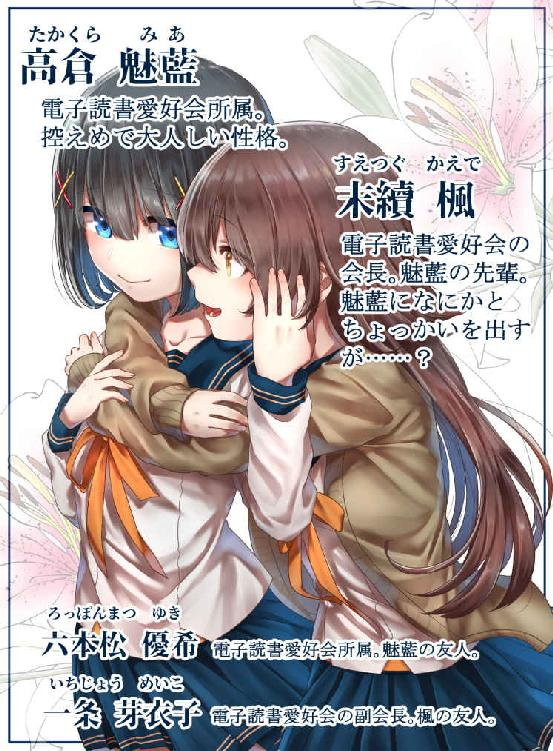
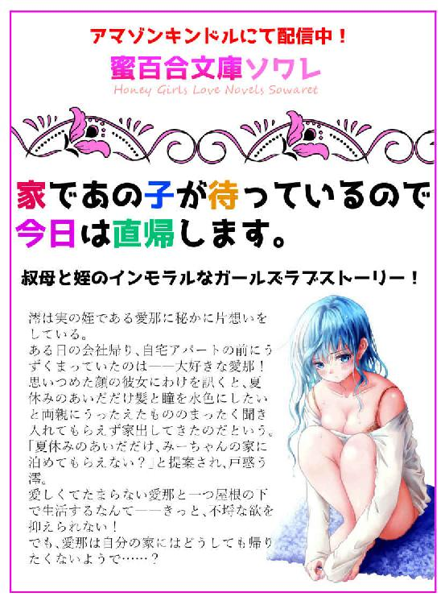
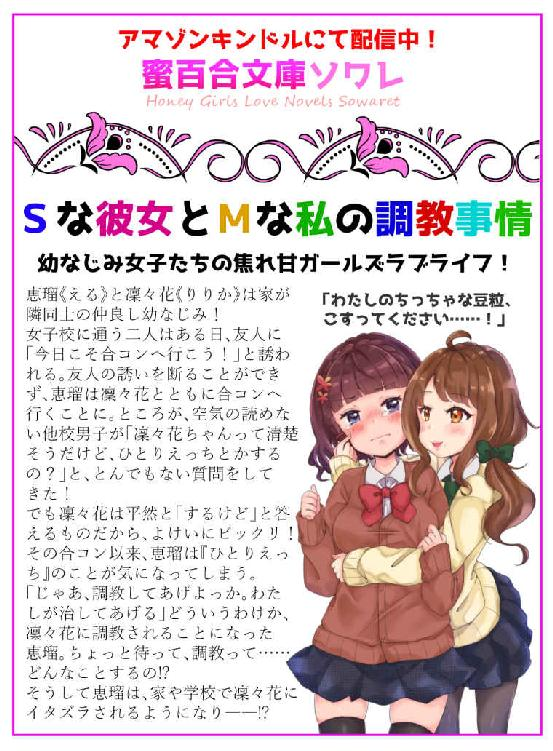
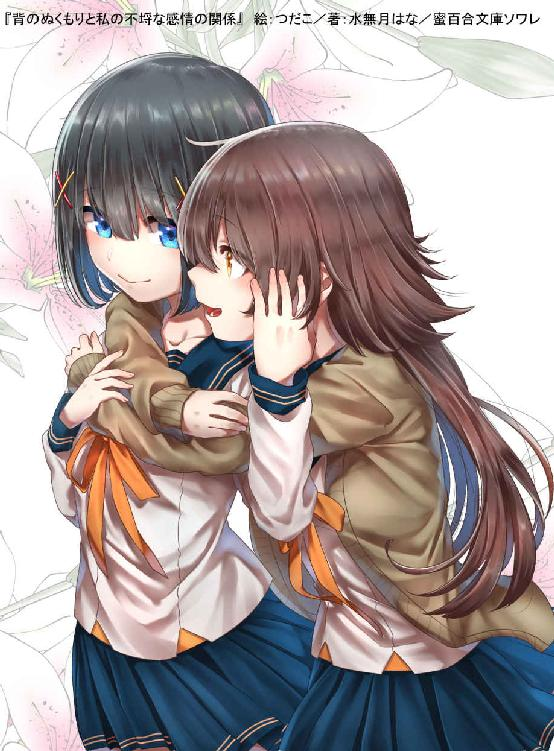
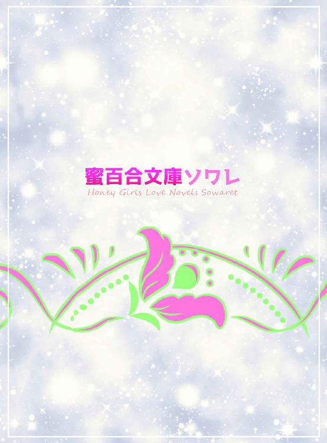

| 背のぬくもりと私の不埒な感情の関係（蜜百合文庫ソワレ） | |
| 水無月はな | |
| Hanamitsu Kikaku (2018) | |
水無月はな

背に感じるぬくもりと、私の中に湧き起こった不埒な感情。この二つには、いったいどういう関係があるのだろう。
考えずともきっと、答えはわかっている。
でも私は、知らないふりをする――。
高倉魅藍は制服に着替えたあと、自室の学習机の棚に立てかけた鏡の前で髪の毛に櫛を通していた。
髪の毛は一本一本が硬く太いからか、寝ぐせがつくことはほとんどない。
肩にぎりぎりつかないセミロングの髪を梳き終えた魅藍はまず赤い飾りピンを手に取り、瞳の横に斜めに挿した。
そのあとは黄色いピンだ。バツ印になるように、赤いピンに重ねてつける。反対側も同じようにバツ印になるようピンを挿せば、完成だ。
このピンの挿し方は以前、とある人に「それ、可愛いね」と言われてからずっと、こういうふうにしている。
ダイニングへ行くと、一つ年下の妹――祐藍がトーストにかぶりついているところだった。
「おはよう、お姉ちゃん」
「おはよう。今日は早起きだね」
魅藍が言うと、祐藍は「まぁね」と得意げに笑った。
食卓につく。するとすぐに母親がトーストとサラダを出してくれた。魅藍はこんがりと焼けたトーストにバターを塗り、シナモンシュガーを振りかけて口に入れた。
「行ってきます」
妹の祐藍と二人でマンションを出る。
「ちょっとずつだけど、暖かくなってきた気がしない？」
駅へ続く道を歩きながら祐藍が言った。
「......そうだね」
吹く風の冷たさが薄れてきた。しかし魅藍はそれを喜べない。
だって、春がきたら――......。
魅藍はキュッと唇を噛みしめて駅への道を急ぐ。
妹とは、通っている学校が違うので駅で別れることになる。
電車に乗り込むなり、魅藍は窓際の席に座って鞄からキンドレ――電子書籍を読むための専用端末――を取り出し、画面をタップして読みかけの本を開いた。
去年のクリスマスプレゼントで両親からこのキンドレを貰う前はスマートフォンで電子書籍を読んでいたものの、一度このキンドレを手にしてしまえばもう他の端末なんて考えられない。
紙の本を読んでいるのと変わらない感覚でどんどん読み進めることができる。
いま読んでいるのは、『Ｓな彼女とＭな私の調教事情』という電子書籍だ。
魅藍はそういった、女の子同士のラブストーリーばかりを好んで読む。しかしこれは、だれにも言っていない。
だれにも言えない、秘密の趣味だから、次の駅に着くまでにこの本は端末上で閉じてしまわなければならない。
「魅藍、おはよう」
魅藍が乗った駅から三つあとに、同じ学校の友人である六本松優希が電車に乗り込んでくる。キンドレ端末の画面はすでに切り替え済みだ。
画面を切り替えて、一般的な――男女が恋愛している――ライトノベルを読んでいたふりをする。
「魅藍様。折り入ってお話があります」
「......課題のノート？」
「ご名答！ さすが、魅藍様は話が早い」
魅藍は小さくため息をついて、鞄からノートを取り出して優希に手渡した。
優希は「ありがとう」と言って受け取り、膝の上でノートを写し始める。そのあいだ、魅藍はキンドレで本を読むというのがもはや朝の慣例になりつつある。
いちごミルク味の飴つきでノートを返してもらった魅藍は駅を出て、優希とたわいのない話をしながら学校へ向かって歩いた。
「そういえば、先輩たちもうすぐ卒業だね」
ドクンッと胸が鳴る。
妹といい優希といい、どうしてそう春の話ばかりするのだろう。
「そう、だね......」
魅藍は俯き加減になって目を伏せた。
先輩の卒業はまだ、考えたくない。だって、一度考え始めてしまったら毎日が憂鬱になる。
魅藍の足取りが重くなったときだった。
「みーあーちゃんっ」
声が聞こえたかと思えば背に衝撃が走った。痛いだとか、そういうことではない。
音もなく後ろから伸びてきた腕に体を包まれ、身動きが取れなくなる。
「かっ、楓先輩......！」
魅藍の体に後ろから抱きついたのは末續楓だ。魅藍の一つ年上である。
「おはよう、魅藍ちゃん」
耳のすぐそばで心地よい声が響いた。女性にしては低くて、少しかすれている。ハスキーボイスと形容するのが、きっと正しい。
「おは、よう、ございます」
魅藍は前を向いたままなんとかしてそう言った。
背中に、楓の胸が当たっている。
心臓がバクバクと鳴り、全身の熱が瞬く間に上がって――どうしてか、下半身のあらぬ箇所がムズムズしてくる。
どうしてこうなってしまうのか、本当はわかっているけれど明確な答えを出せないでいる。
先輩を意識してはいけないのだと、必死に自分に言い聞かせた。
「じゃあまたあとでね！」
楓が手を振ると、その傍らにいた一条芽衣子が魅藍と優希に向かって「また放課後」と言った。
二人は早足で学校の中へ入っていった。三年生は始業時刻よりも早くホームルームがあるのかもしれない。
楓の後ろ姿をいつまでも見送る。ちょっと寝ぐせがついているのはいつものことだが、それもまた先輩のよさだ。
「楓先輩はさ、魅藍のこと好きだよね～」
落ち着きを取り戻し始めていた心臓がふたたびドキッと跳ねる。
「い、妹みたいに......思われてるのかな」
平静を装ってそう言ったものの、声が上ずってしまった。優希は細かいことを気にしない性格なので、問題はないだろう。
「でも、楓先輩は女の子が恋愛対象だって噂あるよね。先輩も、否定しないらしいし」
「......！」
今度は、なにも答えられなかった。曖昧に「へえ」と言い、そのあとは口を噤む。
（私だって......楓先輩のこと......）
それはきっと、同性に抱いてはいけない感情。
（春なんて、こなくていいのに）
そうすれば、先輩とずっと一緒の学校生活を送ることができる。
せめて同じ学年だったらよかったのに、といままでに何度も思った。
しかしなにを思ったところで、春はくるし先輩は卒業してしまう。
時の流れを変えることはできないのだから、せめて自分自身が行動を起こして先輩になにかしらのアピールをしなければ――。
（でも、どうやって？）
考えても考えても、なにも思い浮かばない。
キンドレでこっそり読んでいる小説のように、そう上手くはいかないだろう。それが現実というものだ。
魅藍は優希に気づかれないように「はぁ」とため息をついて、校舎の中へ入った。
先輩がこの電車に乗ってくることはない。
先輩の家は学校からとても遠いから、もっと早い、別の電車だ。
魅藍は今日も電車の中で読書をしていた。言わずもがな、『電子読書』である。
そして、魅藍と優希、それから楓と芽衣子の四人は『電子読書愛好会』として、いつも放課後を共にしている。
電子読書愛好会の活動拠点は校舎の片隅にある。元は用務員室だったので、電気ポットや流し台、エアコンなど、快適に過ごすための設備は整っている。
部ではなく愛好会なので、この部屋の通称は『部室』ではなく『読書室』である。
四人揃うと読書室は手狭になるが、魅藍はこのこぢんまりとした空間が好きだった。
灰色の無機質な四角いテーブルには窓際に楓と芽衣子、扉側に魅藍と優希がそれぞれ向かい合って座る。それが定位置だ。
魅藍は楓の隣の席だ。向かう合うよりも互いの距離が近く、話しやすい。それは優希と芽衣子も同じのようで、読書室にいるときは特に、隣同士で話をすることが多い。
「魅藍ちゃん、いまなに読んでるの？」
楓が身を乗り出してきたので、トンッと肩が当たった。
魅藍は思いがけず、手に持っていたキンドレを落としそうになったが、ギュッと掴むことで持ち直した。
「あ、ええと......これです」
キンドレ上でしおりを挟んで、表紙のページに飛んで画像を見せると、楓は「へえ、面白そう」と言って笑った。
（楓先輩は、肩が触れ合うのなんて......べつに、なんでもないんだろうな）
ほんの少し肩が当たっているだけでもトクトクとうるさく脈を打つこの心臓をどうにかしたいと思うものの、脈拍まではコントロールできない。
魅藍はただジッとして、楓がもとの位置に座り直すのを待つしかなかった。
電子読書を始めて一時間が経つと休憩を取る。
今日のお茶当番は魅藍だ。
楓はコーヒー、芽衣子と優希は紅茶を飲む。魅藍はティーカップにインスタントのドリップコーヒー、それから紅茶のティーバッグをセットしたあと、ポットからお湯を注いだ。
読書室にはコーヒーと紅茶の香りが混ざり合って立ち込める。この独特の匂いは、悪くない。
皆に飲み物を出してから自分の席につき、コーヒーに粉砂糖とミルクを入れ、かき混ぜているときだった。
「ねえそういえば、どっちが会長でどっちが副会長か、決めた？」
楓はブラックコーヒーを一口啜ったあとで、魅藍と優希に向かってそう投げかけた。
いまの会長は楓だ。芽衣子が副会長である。
「いえ、まだです」
優希が答えると、楓は「そっか」と返すだけだった。会長の指名、というようなことはしない。
「新入生の勧誘、頑張ってね」
紅茶が入ったティーカップを、ハンドルの部分を上品に摘まんで持ったまま芽衣子が笑う。
そういう話題になると、もう本当に『いよいよ』なのだと実感させられる。
しかし、皆の前でため息をつくわけにはいかない。湧き起こった負の感情を、必死に堪えて自分の中に押し留める。
悶々とした気持ちを抱え込んでしまったからか、その後、読書をしていても内容がまったくといっていいほど頭の中に入ってこなかった。
「私、今日は用事があるからちょっと早めに帰るわね」
芽衣子が言った。すると優希も「じゃあ私も一緒に」と言って帰り支度を始める。
「二人とも、また明日」
読書室の出入り口で芽衣子が言った。
「はい。お疲れ様でした」
魅藍は優希と芽衣子を見送ったあと、ふたたびキンドレに視線を向ける。しかしやはり、内容どころではない。
楓と、二人きりになってしまった。
こういうことはよくある。優希と芽衣子は仲がよいので、二人だけで帰るということも、よくある。
それなのに、いまだに楓と二人きりということに慣れない。
慣れないまま、楓は卒業してしまう。
「ねえ、魅藍ちゃん。私、もうすぐ卒業じゃない？」
手元を見ながら、平坦な調子で楓が言った。
にわかにトクトクと鳴っていた心臓がズキンと痛む。
――そうですね、寂しいです。
そう言おうと思ったが、言葉が出てこない。
代わりに込み上げてきたのは涙だ。泣くのを我慢しておかしな顔になっていることだろう。
魅藍は思いきり下を向いて顔を隠した。
「だから......思い出作り、させて」
頭上から降ってきた、まったく予想していなかった言葉に「えっ？」と頓狂な声を発して顔を上げる。
「思い出作り、ですか......？」
どこかに出掛けるのだろうか。
だってそれが、一般的な『思い出作り』だと思うから。
でも、楓のそれは違った。
ガタンッと音を立てて楓が椅子から立ち上がる。魅藍も、つられて椅子から立ったものの、楓がなにをするのかわからずその場に立ち尽くした。
楓はまず扉の内鍵を掛けた。それから大股でツカツカと歩いて窓のカーテンを閉めきる。
部屋を暗くして、いったいなにをするつもりなのだろう。
ゆっくりとした足取りで楓は魅藍の前に立つ。微笑みをたたえている。その表情からは、なにを考えているのか皆目見当がつかない。
楓が両手を広げた。バンザイをしているのではなく、こちらへ向かって伸びてくる。
いつもは後ろから。
今日は、前から。
背中からでなく真正面から、楓の腕に包み込まれる。
「本当はね、ずっとこうしたかった。こうして、正面から魅藍ちゃんを抱きしめたかった」
楓に頬ずりをされ、背中を撫で上げられた。くすぐったい。
（抱きしめるのが、思い出作り......ってこと？）
たしかに、これならば思い出になる。
楓の温かさがじわりと伝わってきて、身も心も満たされる。
でもそう感じているのは自分だけかもしれない。楓にとっては、このくらいのスキンシップはどうということはないのかも――。
いつの間にか楓の両手が頬にあてがわれていた。
真剣な眼差しでジイッと見つめられる。
「キス......していい？」
耳を疑った。
なにを言われたのか、一瞬わからなかった。
「......ッ、キ......!?」
口に出すのが憚られる。聞き間違えていたとしたら恥ずかしい。
「キス、したい。魅藍ちゃんと」
はっきりとそう聞こえた。
（聞き間違いじゃ、ない......！）
もともと、ドキドキとうるさかった心臓がいよいよ早鐘を打つ。
「あ......え、ええと」
楓はどこにキスをするつもりなのだろうと考える。
唇を、人差し指でそっと辿られる。それがきっと、内なる疑問の答えだ。
魅藍はコクリと頷いた。
肯定の言葉は出てこない。なぜ楓がキスをしたがるのか、尋ねる勇気はなかった。
（気まぐれでも、なんでもいい......。楓先輩とキスできるのなら）
魅藍は目を伏せたあと、そのまま閉じた。
楓の顔が近づいてくるのが、感覚でわかる。
柔らかいなにかを唇に押し当てられた。
うっすらと目を開ければ、間近に先輩の瞼があった。
唇はすぐに離れてしまった。
（もう、終わっちゃった......）
だれかと交わす、初めてのキス。それが、物足りなかったのだとは口が裂けても言えない。
「あー......どうしよう。キスだけのつもりだったんだけど......」
楓は眉根を寄せて、苦しげな表情になった。
「もっと、魅藍ちゃんをかわいがりたい」
魅藍は何度か瞬きをして、戸惑いを露にする。
（か、かわいがる......？）
先輩にはもうじゅうぶん、かわいがってもらっていると思う。
でもきっと、そういうことではないのだろう。
魅藍は両手を胸の前にかざして、手のひらを閉じたり開いたりした後に、
「ど、どうぞ......！」
必死の形相で魅藍が言った。楓は目を丸くしたあとで、なにが面白かったのか「ふふっ」と軽快に笑った。
「じゃあ、遠慮なく」
魅藍の頬を撫でまわし、顔を上向けさせて目を細める。
予告がなかったので、目を閉じ忘れた。
二度目のキスは、一度目に交わしたものよりも格段に長かった。
「んっ、ん――」
唇同士は触れるだけではない。上唇と下唇を何度も何度も柔らかな唇で挟まれる。
鳥が果物を啄むように、楓は魅藍の唇をじっくりと味わう。
しだいに頭の中が白くぼやけてきた。その心地よさに、我を忘れて夢中になる。
だから、胸元で結われていたオレンジ色のリボンを解かれていることに気がついたのは、楓の指先が制服の裾を引っかけたときだった。
「......っ、え......!?」
先輩の右手が制服の内側へと潜り込んで、背のほうにまわる。もぞもぞと動いて背を這い上がり、ブラジャーのホックをプチンと弾く。
「ぁっ......！」
小さく悲鳴を上げて、魅藍は肩を竦める。
制服の裾の、オレンジ色になっている部分を摘ままれ、捲り上げられる。
「あ、ま、待って、ください......！ その、私......っ」
魅藍は慌てて制服の裾を押さえた。
「んんー......？」
楓は魅藍の頬に自分の頬をスリスリと擦りつけて問う。
「私に触られるの、イヤ？」
吐息が耳に吹きかかり、そこから快いなにかが体じゅうに広がっていく。
魅藍の頬が瞬く間に朱を帯びる。
「そ、そういうことでは、なくて......ええと」
「なぁに......？ 教えて」
脇腹を手のひらで撫でられると、「ふぅ、うぅ」と思わぬ声が出てしまう。
「魅藍ちゃん」
答えを急かすように名を呼ばれた魅藍は唇をキュッと噛みしめて覚悟を決めた。
「私っ......胸が、小さいので......」
虫の鳴くような声で告白すると、楓はすぐに「そう？」と軽い調子で返した。
「でも魅藍ちゃんが気にするんなら、見ない。触るだけにする」
脇腹にあてがわれていた手が、膨らみのほうへと伸びてくる。
先輩の手は柔らかくて滑らかで――そんな優しい手で胸に触れられたら自分はどうなってしまうのだろうと、漠然と不安になった。
ギンガムチェックのブラジャーの内側へ、楓の両手が入り込む。
「ふっ......」
恥ずかしくて、でも嬉しいという気持ちもあって、複雑だ。
楓は慎重な手つきで魅藍の乳房を包んだ。魅藍のそれは女性の手でもすっぽりと覆える大きさだ。
魅藍は唇を噛みしめ、眉根を寄せる。頬は熱くなったままだ。冷める気配は微塵もない。
先輩の両手に力がこもるのがわかった。
ゆっくりと、二つの膨らみを揉み込まれる。
楓はうっとりとしたようすで破顔する。
「柔らかいなぁ......魅藍ちゃんのおっぱい」
「～～っ！」
瞬く間に羞恥心が爆ぜて、耳までカァッと熱くなる。
先輩に胸を揉まれている状況に、いまさらながらついていけなくなって、くらくらしてくる。
（でも......気持ちいい......）
微睡みの只中にいるような心地のよさだ。
「――っ、あ」
魅藍はビクンッと両肩を上下させた。温かな指先が乳輪の際に触れたからだ。
「魅藍ちゃんの乳首がどんなふうになってるのか、見られないのはちょっと残念だけど......」
制服の下で、楓の指先が膨らみの中心へ向かって蠢く。
「いつか、見せてね？」
「ひゃっ、ぁ......ッ！」
いましがた「いつか見せてね」と言われた箇所を二本の指で摘まみ上げられる。
「あっ、あぁ......んっ、ふぅっ......」
薄桃色の棘の根元を左右に揺さぶられると、そこから快感の波が広がって、両足がカクカクと震え出した。
（なに、これ......っ!?）
乳首を摘まんでクニクニと揺らされるのが、こんなにも気持ちがいいなんて知らなかった。
自分では、自分のそこをこんなふうには弄らない。せいぜい、体を洗うときにタオルがほんの少し擦れる程度だ。
（楓先輩に触られてるから、こんなに......気持ちいいのかも）
でも、そういう先輩はどうなのだろう。
（私の乳首を触って、楽しいの......？）
視線を上に向けて先輩のようすを伺う。
「んん？」
楓は口の端を上げて魅藍の顔を覗き込んだ。
「平気？ ......気持ち悪くない？」
魅藍は二、三度首を横に振った。それから「平気です」と答える。
「そっか、平気なんだ。じゃあ......もっと、強くしてもいい？」
指のあいだに挟まれていた乳頭を引っ張り上げられる。
「ふぁっ!?」
鋭い刺激に見舞われる。
「痛かった？」
「い、いえ......その......んっ、んぅう......っ！」
今度は、粘土のように捏ねられる。あまりに執拗にそうされるので、そこの形が変わってしまうのではないかと危機感を覚えた。
――でも、気持ちがいいのには違いなくて。
「ンン、ンッ......はぁっ......」
口からはしたない声が溢れ出るのを止められない。
魅藍は自分で自分を支えきれなくなってよろよろとあとずさった。狭い部屋なので、すぐ壁に当たる。
壁に背を預けて、「んぁ、あぅっ」と悶えていると、楓の片手が胸から離れた。
「......？」
もっと弄ってもらいたいのに、とは言えない。恥ずかしい。
楓の右手が紺色のスカートを撫でる。スカートの裾に入っている金色のラインをツツ、と指でなぞったあと、楓はその手を内側へと滑り込ませた。
スカートの中に手を突っ込まれた魅藍は動転して「ひゃっ！」と大声を上げる。
「もしも痴漢にあったら、そんなふうに大声を出さないとね」
楓はすぐに言葉を継ぐ。
「ううん......痴漢は、私かぁ」
――先輩の痴漢なら大歓迎です。
「ぁ、あ......っ」
心の声は外には漏らさない。魅藍は口を半開きにして目を細める。
ショーツ越しに陰毛のあたりを撫でまわされている。
指先は躊躇いを見せながら、徐々に下方へと滑っていく。
「あ――」
そこに触れられてはいけないような気がした。
でも、もう遅い。
「......ちょっと、濡れてるね」
楓は大きく息を吐く。ため息のようにも見えた。
「ちょっとじゃ、ないね。だいぶ......かな」
耳のすぐそばで楓が言葉を紡ぐので、くすぐったさと同時に手足に甘い疼きが湧き起こる。
「下着越しでもわかるくらい、濡れてる」
咎めるような調子で言って、楓はショーツの上で爪を立てた。
クロッチ部分を爪先でカリカリと擦り始める。
「んあ、ぁっ......！」
脚の付け根の、どうなっているのかよくわからない箇所を楓の指先が何度も往復する。
（あぁ――なにこれ、なにこれっ......！）
下腹部から、なにかが込み上げてくる。
それは嫌なものではなくて、むしろ真逆の快いものだ。
ピンッと勃った乳首を指で嬲られ、陰毛のすぐ下を素早く擦り立てられる。
自分がどういう状況に陥っているのか――いまにも絶頂してしまいそうなのだと――このときはわかっていなかった。
どうしようもないまでの浮遊感に見舞われ、初めてのことに空恐ろしくなる。
「ひぁああ、あぁっ――......!!」
絶叫して、魅藍は下半身をビクン、ビクンッと痙攣させた。
楓の吐息が耳にかかる。まるで大切なもののように、優しく抱きしめられる。
魅藍は虚ろな瞳で、「はぁ、はぁ、はぁ......」と息を荒くして楓を見上げた。
（思い出、作り......）
どうしてこうなったのかといえば、すべては楓が「思い出作りをしよう」と言ったからだ。
今日のことはきっと、忘れようと思っても絶対に忘れられないだろう。
『デートしない？』
おはようだとか、いまなにしてるだとか、そういう前置きはなく突然、そのメッセージがスマートフォンに届いた。
布団の中、寝ぼけ眼で楓からのメッセージを読んだ魅藍は『喜んで！』と送ってしまったあとで目を見開いて布団から飛び起きた。
「デッ、デート!?」
独り言を紡ぎながらライムのメッセージを再確認する。ちょうどまた、メッセージがきた。
『じゃあ、迎えに行くね。三十分後で大丈夫？』
「さ、三十分後!?」
慌てふためきながら、クローゼットの扉をバァンと開いてデート服を物色しつつ、『大丈夫です』と返信した。
（あれっ、でも......『迎えに行く』って、どういうこと？）
電車でどこかへ行くわけではないのだろうか。
（電車でないのから......歩いて？）
このあたりは住宅街だ。デートスポットと呼べる場所は一つもない。
そもそも、女の子同士で『デート』が成り立つのだろうか。
（ただ道を歩くだけでも、楓先輩と一緒なら嬉しいから、まぁいっか）
魅藍は先週、購入したばかりのワンピースを手に取り、素早く着替えを済ませて洗面台へと急いだ。
三十分後、マンションのエントランスから駐車場へ出ると、楓はすでにそこにいた。
「おはよう、魅藍ちゃん。急にごめんね」
「いっ、いえ......！」
楓は黒い大きなオープンカーの前に立っていた。エンジンはかかったままだ。
「楓先輩の車......ですか？」
「うん、まぁ。実家のだけどね」
「そうなんですね。免許、いつ取ったんですか？」
「さて、いつでしょう」
楓はニッと笑って、助手席のドアを開ける。
「ほら、乗って」
「は、はい。よろしくお願いします」
ペコリとお辞儀をして魅藍は助手席に乗り込んだ。自分の家の車よりも座席が低いところにあるので少し乗り込みづらかったが、座ってしまえば助手席のシートは弾力があり、居心地がよかった。
楓は運転席に乗り、サングラスを掛けた。ブロロロ、と大きな音を立てて車が走り出す。
「今日は天気がいいから、オープンでも問題ないね。すがすがしい」
風は冷たいけれど車に天井がないぶん頭上からの陽射しがあるし、思いのほかエアコンが効いているので寒くはない。
「どこへ行くんですか？」
「さて、どこでしょう」
運転免許の取得時期を訊いたときと同じ調子で返して、楓は前を向いたまま笑う。
魅藍は家から駅までの道しか知らないので、楓がどこへ向かっているのかさっぱりわからなかった。
オープンカーで軽快に走ること一時間。
着いた先は郊外の水族館だった。
「ここ、来たことある？」
「はい、子どもの時に何度か。でも最近は全然」
「そっか」
楓は早足でエントランス脇のカウンターへ行き、二枚の入館チケットを持って魅藍の元へ戻る。
「はい、魅藍ちゃん」
「ありがとうございます」
魅藍がハンドバッグから財布を取り出すと、楓はその手を無理やりバッグの中へと押し戻した。
「いいのいいの、いきなり誘っちゃったんだし。私、バイトしてるからそこそこ小金持ちだし」
「でも――」
「もうすぐ卒業だから......先輩面させて？」
「......！」
悲しげに笑って小首を傾げられれば、こちらはなにも言えなくなる。
瞬時に込み上げてきた涙をなんとかして目の中に留めて、魅藍はふたたび「ありがとうございます」と礼を述べて頭を下げた。
子どものころに何度か来た、という記憶はあったが、館内がどんなふうになっていて、どんな水槽があるのかということはまったく覚えていなかった。
エントランスホールから入ってすぐ、背丈の何倍もある大水槽が出迎えてくれる。魅藍は「わぁっ」と声を上げてはしゃいだ。
深海魚やペンギンの水槽を見てまわっていると、イルカショーの時刻を知らせる館内アナウンスが聞こえてきた。
「ショー、見よっか」
「はい！」
「行こう、こっち」
左手を取られる。すると、先日の出来事が脳裏にパッと蘇った。
この柔らかな手が、胸や足の付け根の秘めたところに触れたのを思い出してしまい、顔が熱くなる。
半屋外にあるイルカショーの会場はすでに人で溢れ返っていた。
魅藍と楓は水色の椅子の端に並んで座り、ショーの開始を待つ。
「ここ、水しぶきが飛んでくるかもね？」
「ええっ!? ど、どうしましょう!?」
慌てる魅藍を見て楓は口元を押さえて「ふふっ」と笑った。
「ウソウソ、たぶん大丈夫」
魅藍は両手に作っていた握りこぶしを力なく膝の上に戻す。
「も、もうっ......楓先輩ったら」
唇を尖らせていると、ポンッと軽く頭を叩かれた。
「水族館って、こんなに楽しかったっけ」
魅藍の黒髪を、楓の指先がそっと梳く。
「......魅藍ちゃんと一緒だからかな」
そうして微笑みを浮かべるものだから、魅藍は頬を赤らめずにはいられない。
――私だって、楓先輩と一緒だから......すごく楽しい。
そう言葉を返したかったのに、気恥ずかしさが邪魔をしてきてなにも言えなかった。
日がな一日、水族館を満喫したあと、二人は海を臨む高台へ向かった。
陽が高くなる前に家を出たはずなのに、もう沈みかけている。
オレンジ色の夕陽は海の下へと、早足で消えていく。
楓は高台の柵に手をつき、沈む夕陽を眺めている。そんな楓を魅藍はチラリと盗み見る。
夕陽に照らされた楓の横顔は煌いて見えた。ライトブラウンの髪の毛が海風にそよぎ、陽光をきらきらと反射している。
「ん......？ なぁに」
楓がこちらを振り返る。
見惚れていたとは言えず、魅藍は「あの、その」と口ごもった。
「きっ、今日は――なにからなにまで、ありがとうございました」
「ううん、こちらこそありがとう。付き合ってくれて」
楓は微笑したまま視線を前へと戻し、ふたたび夕陽を見つめた。
魅藍もそれに倣って、半分以上沈んでしまった太陽を眺める。夕陽というのは、見ているとなんだか物憂げになる。
「はぁ......夕陽を眺めてると、なんかこう......ムラムラしてきちゃうな」
「へぁっ!?」
魅藍は頓狂な声を上げて楓を仰ぎ見る。
「魅藍ちゃんは？ どう？」
「え、ええと......。よく......わかりません」
「そっか」
楓がなにを考えているのか、いつもながらわからない。
（夕陽を見て......っていうのは、よくわからないけど）
夕陽に照らされた楓をジイッと凝視していたのならばきっと、そういう気分になることだろう。
「そういうわけだから、ちょっとだけ......触らせて？」
「えっ!?」
――いったいどういうわけなの!?
魅藍はあからさまに狼狽えて、きょろきょろとあたりを見まわす。
「こっ、ここで、ですか......？」
楓に『触られる』のが嫌なわけではない。
いまはこの高台には二人きりだが、いつだれが来るかわからない。
「じゃあ、車の中に行く？」
楓の提案に、魅藍は小さく頷く。
車に戻ると、楓は運転席でなにやら操作をしてオープンカーの屋根を閉めた。
「どうぞ、中へ」
後部座席に乗るよう促されたので、そのとおりにした。
魅藍が車に乗ると、その後ろに楓も続く。
「......っ、ひゃ！」
思いがけず声を上げてしまったのは、楓に押し倒されたからだ。
陽はすっかり落ちて、あたりはいっそう暗くなっていた。
薄暗闇の中、楓の顔が間近に迫る。
目を完全に閉じる暇もなく、楓に唇を塞がれる。ちゅ、ちゅっと、柔らかな唇が触れては離れていく。
（な、なんか......恋人同士みたい......？）
――実際、私と先輩はどういう関係なのだろう。
学校の先輩後輩という関係からは逸脱している。
ただの先輩と後輩は、車の後部座席でこんなふうにキスを交わさない。
「......んっ」
楓の右手が服の上から左の乳房を掴んだ。ワンピース越しに胸を揉まれる。
「ねぇ、薄暗いから......おっぱい、外にだそっか」
唇が離れるなりそう提案されたものだから、魅藍はぶんぶんと首を横に振った。
「暗くて見えないから、ね？」
「見えないなら、隠したままでも......」
「だってそれだと、魅藍ちゃんの乳首を舐められない」
「な、舐め......っ!?」
目を白黒させる魅藍に、楓は何食わぬ顔で懇願する。
「うん。舐めたいの。......おねがい」
白いワンピースの裾をゆるゆると引き上げられる。
「あ、あのっ、待ってください」
「んん......待てない。だって、早く舐めたいの。魅藍ちゃんの乳首」
「......っ!!」
中に着ていたキャミソールごと、首の下まで捲り上げられる。
「ワンピースとお揃いの白いブラだね」
「みっ、見えてるじゃないですか......！」
「色くらいなら、なんとなくわかるよ」
クスッと笑って楓は魅藍の白いブラジャーの下端を摘まんで、引っ張り上げる。
「あっ......！」
ブラジャーの、背のホックは外れていない。無理やり押し上げられてしまった。
魅藍はとっさに両手を前に持ってきて胸を隠した。小さな胸なので、隠すのは簡単だ。
「魅藍ちゃん。暗くてはっきりとは見えないから、腕を退けて？」
優しい声音だ。でも、抗えないなにかを醸し出している。
「ね......？ 魅藍ちゃん」
両手首をそっと掴まれ、左右に開かされる。自分の意思では腕を動かせなかった。胸の高鳴りは最高潮に達し、息遣いまでも荒くなってくる。
魅藍の手首を車のシートの上に磔にすると、楓は後輩の乳房を間近で凝視した。
「み、見ちゃ......イヤ、です」
「それほど見えてないよ？」
「ほ、本当に......？」
「ホントホント。うーん、魅藍ちゃんの乳首は、どこかなぁ。暗くてわからない」
膨らみの表皮を手探りされる。
「ゃっ、くすぐった......ぃ、ですっ......！」
「だって、よく見えないから」
先ほどから先輩の語調がいやにわざとらしいような気がするが、「よく見えない」と断言されてしまった以上、言及できない。
「はぅ、ん......んっ、んぅ」
楓の指先は胸のいただきに、触れそうで触れない。この、むずむずとした燻るような感覚はなんなのだろう。
胸を撫でまわすのに飽きたのか、楓は頭を低くして赤い舌を覗かせる。
「ふっ......あ、あぁ......っ」
脇腹のほうから、熱い舌が膨らみの稜線を上り始める。薄桃に色づいた部分までやってくると、忘れ物を思い出したようにまた脇腹のほうへと戻っていった。
楓の舌は乳輪の際まで這うものの、ピンッと尖った胸飾りには触れてくれない。
（ああ......そっか）
この感覚は『焦れ』だ。楓の舌が乳頭に触れないものだから、じれったくてたまらない。
「ねぇ、魅藍ちゃんの乳首はどこ？ 教えて」
湿った肌を熱い吐息が撫でる。
「こっ......ここ、です」
魅藍は涙目になって、指で乳首の位置を示した。早く触れてもらいたくて仕方がなかった。
楓の口が大きな弧を描く。
「ふふっ、魅藍ちゃん......かーわいい」
舌先が薄桃色の棘の根元からてっぺんまでをベロリと舐め上げる。
「ふあぁあぁっ！」
凄まじい衝撃だった。雷を落とされたような、というのはさすがに言いすぎかもしれないが、体の隅々までビリビリと快感の波が伝わって、うねりを伴って甘く痺れる。
楓はなおも魅藍の乳頭を下から上へと舐めた。たまに舌先が左右に蛇行する。それがまた気持ちいい。
「ぁっ、あっ、ふぁ......んん、んぁっ......！」
口から出てくるのは、自分のものとは思えない高い声ばかり。恥ずかしいのに、制御できない。
楓が口を大きく開けた。そのようすを見て魅藍はビクッと全身を弾ませた。
ちゅぷっと水音を立てて、胸の先が楓の口の中へと吸い込まれていく。
「ひぁああ、ぁあっ！ ゃう、うううっ......！」
乳首を吸われるのがこんなにも気持ちのいいものだなんて、いままで知らなかった。
自分で自分の乳首は舐められない。胸が大きな人ならば可能かもしれないが、貧乳の自分には無理だ。
もぎ取られてしまいそうなくらい強く吸われると、「あぁぁああっ!!」と大きな声が出る。下半身には触れられていないのに、脚の付け根がヒクヒクと震えているのがわかった。
ちゅぽっと大きな水音を奏でながら楓は魅藍の乳頭を解放し、舌なめずりをする。
「ねぇ、魅藍ちゃんはさ......自分の体がどうなってるのか、ちゃんとわかってる？」
「ふっ......ぇ？」
ワンピースを捲り上げられたせいでむき出しになっていた白いショーツに、細長い指先がトンッと乗る。
ショーツ越しに茂みの上をくるくると踊ったあとで、指先は割れ目へ下りた。
「この小さな豆粒――おしっこが出るところね。これ、擦ると気持ちいいよね」
そう言って楓は指先を小刻みに動かして、秘めやかな肉粒を探り当てた。
「ぁ、あふっ......」
指先でグリグリと秘核を押される。
「ねぇ、違う？」
「ち、違わない、です......！」
はっきりと肯定しなければ楓は手を退けてしまうのではないかと思った。
必死な形相の魅藍を見て楓は嬉しそうに笑む。それから、魅藍の反応を見ながら指を上下に動かして快楽の粒を刺激した。
「ぁん、あぁっ......ふはぁっ......」
気持ちがよくて、息をするのを忘れそうになる。少し苦しくなって、つい呼吸を止めてしまっていたことに気がついた。
「魅藍ちゃん......直接、触ってもいい？」
そんなの、いまさらだ。
すでに恥ずかしい姿を晒しているのだから、直にそこに触れられたとしてもどうということはない。このときは、そう思った。
魅藍は首を小さく縦に振った。
同意を得ると、楓は愉しそうに口角を上げてショーツの端から内側へと指を潜り込ませた。
楓の指が花芽をトントンッと素早くノックする。ショーツ越しにされるのとはまったく異なる刺激に、魅藍は驚いて「ひゃっ！」と叫んだ。
（や、やだ、どうしよう......！）
隔てるものがないというだけでこんなにも快感に差が出るものなのか。
それまでだって気持ちがよかったのに、もっと上があるなんて――。
魅藍の乳房の先端を左手で丹念に捏ねながら、楓は右手の中指で蜜口を漁った。
そこはよく濡れていた。溢れ出た蜜を掬い取って、花核に塗り込める。
「ふはぁっ、ああぁあっ......！」
魅藍が色好く反応するのを見て、楓は何度も愛液を掬っては、肉粒にぬめり気を足していった。
「ど、どうして、こんな......ヌルヌル......ッ？」
絶え絶えに魅藍が言う。
もう、気持ちがよすぎてわけがわからない。
「えっちな液体が溢れてきてるんだよ。魅藍ちゃんの中から」
「えっちな、液体......？ ん、んんぅっ......」
「そう......。これが溢れてるってことは、すごく気持ちがいいってこと」
諭すような声音だ。耳元に唇を寄せられる。
「どんどん出てきてるね。......嬉しい」
「......っ!!」
下腹部がきゅうっと締まったような感覚に見舞われた。
楓の指が速さを増す。胸と花芯を弄る指の動きが、どんどん激しくなっていく。
「あっ、あぁっ......せんぱ......ぃ、あん、あぁあぁあっ......！」
魅藍は瞬時に高みへと昇りつめた。
体は下半身を中心に大きく脈打ち、そのあとに脱力感が襲ってくる。
瞳には涙の膜が張っていた。
ぼんやりとした、暗い視界の中で、どこか哀愁を漂わせて先輩は笑う。
その姿は、なによりも鮮烈だった。
今年の卒業生にはきっと晴れ女が多いのだろう。
卒業式当日は申し分のない晴れ空に恵まれた。
魅藍は体育館のステージ前――在校生たちが座る椅子の最前列で、折り畳んだ紙を手に出番を待っていた。
「在校生代表、高倉 魅藍さん」
「はい」
四角い椅子から立ち、階段を上って来賓や先生に会釈をして壇上へ歩く。
深呼吸をしたあと、手に持っていた紙を広げ、マイクの前で送辞を読んだ。
この送辞に応えてくれるのは、楓先輩だ。
先輩が学年トップなのは知っていた。だから、がむしゃらに勉強して、成績優秀者を勝ち取った。
先輩が答辞を述べるとわかっていたから、どうしても自分が送辞を読み上げたかった。
送辞を述べ終わり、自分の席に戻ると、すぐに楓の名が呼ばれた。
自分がしたのと同じようにして、楓が壇上に立つ。その姿は悠然としていて凛々しく、いつまでも見ていたくなった。
（楓先輩の声......マイク越しに聞くと、いつもと少し違う）
一言一句、聞き漏らすまいと集中する。
送辞を述べたときよりも、いまのほうが真剣かもしれない。
私の活力の源はいつだって先輩だ。
そんな先輩が卒業してしまう。これから、なにを目標に頑張ればよいのだろう。
卒業式が終わると、魅藍は読書室へ向かった。
約束があるわけではない。
でもなんとなく、先輩がそこにいるような気がした。
読書室の引き戸の前に立つ。この部屋の鍵は先輩が持っている。
廊下から見た限りでは、中に人の気配はなかった。電気はついていないし、物音もしない。
部屋の中に先輩がいないのなら、ここに用はない。
魅藍は「はぁ」と息をついて読書室に背を向ける。
すると、カラカラッと乾いた音を立てて読書室の引き戸が開いた。
「魅藍ちゃん」
その声でバッと勢いよく振り返った。腕組みをした楓が、扉を背にして立っていた。
「あ――」
ご卒業おめでとうございます、と言わなければ。
でも、出てくるのは涙ばかり。
ぼろぼろと涙を零し始めた魅藍を見て、楓は「中に入って」と言って魅藍を読書室へと引き入れた。
楓はカチャン、と金属音を響かせて読書室の内鍵を掛け、魅藍の瞳から次々と溢れてくる涙を拭う。
「あーあ、魅藍ちゃんたら......こんなに泣いちゃって」
――でも、先輩だって目が潤んでる。
楓の体を大きく揺さぶれば、その茶色い瞳からはすぐに涙が零れ出るのではないかと思う。
「ほら、いい加減に泣き止んで」
両頬を手のひらで覆われた。
楓の手は冷えきっていた。読書室のエアコンは動いていない。
魅藍は楓の手に自分の手を重ねた。少しでも温めたいと思った。
これまで、たくさんのぬくもりを貰ったから。
楓の手のひらが自分の温度に馴染むと、唇が重なった。
「ふ――」
これまで交わしてきたものとは違うキスだった。舌が、入り込んできたのだ。
「んふ、ぅっ......」
肉厚で、生温かな舌が口の中を暴れまわる。魅藍は翻弄されるばかりだった。
（でも、嬉しい......）
懸命に求められているような心地になる。愛されているような錯覚に陥る。
（好き、なんて......言われてないのに）
楓は優しく触れてきて、甘い言葉を囁いてくれるが、そこに愛を示す言葉は一つもない。
むしろ、『思い出作り』と称されてしまった時点で、いつかは終わりがくることを暗示しているではないか。
（だめ......これ以上、よけいなこと考えちゃ――）
唇が離れると、互いの息遣いがひどく乱れていた。
魅藍がいまだに涙目なのは、『よけいな考え事』をしていたせいだ。
「魅藍ちゃんって、こんなに泣き虫だった？」
頬を赤く上気させて、楓は自身のセーターのボタンをプチプチと一つずつ外していく。
「......？」
魅藍はそのようすを呆然と眺めていた。読書室のエアコンは稼働していない。セーターを脱いだら寒いに違いない。
ところが楓はそれ以上に薄着になった。
制服の裾が、ゆっくりと捲り上げられていき、楓の素肌が露出する。
寒いだとか、そういうことは考えられなくなった。
曝け出された二つの豊かな膨らみに、釘付けになる。
自分のものよりも格段に大きな乳房がそこにあって、先端はツンッと上を向いている。乳輪や尖りの部分は鮮やかな薄桃色だった。
そこに触れたい、という衝動に駆られたのは初めてだった。
「私の......この姿を、ずっと――覚えていて」
楓の声は少し震えていた。
自ら晒したとはいえ、羞恥心はあるのだろう。
「魅藍ちゃんも、同じように......して。私も、目に焼きつけたいから」
「えっ......」
先輩の胸をさんざん見つめておきながら、自分も同じことをするよう言われて拒絶するなんて、できない。
（だけど、こんな明るいところで見られるのは......恥ずかしい）
魅藍は楓の顔と自身の胸元に視線を巡らせながら躊躇った。
「ね？ 魅藍ちゃん」
――ああ。私はこの呼びかけに弱い。
「......はい」
この小さな胸はもう見られているし、舐められもした。
なにより、先輩の目に自分の姿が焼きつくのなら、それほど喜ばしいことはない。
魅藍は楓と同じように、セーターを脱いで制服の裾を鎖骨のあたりまでグイッと引き上げた。ブラジャーごとそうしたので、なだらかな胸が一瞬で露呈した。
楓は魅藍の顔や胸を、視線で舐めまわす。
「うん......魅藍ちゃん、やっぱり可愛い」
楓が歩くと、その大きな乳房がたぷん、たぷんという具合に艶めかしく揺れた。
「......っ」
魅藍は思わず、胸元を押さえて楓に背を向けた。
こんなに明るい部屋なのだ。間近で胸を見られるのは恥ずかしい。
「あれ、どうしたの」
後ろから抱きつかれる。
その行為自体は珍しいことではないのだが、なにぶんいまは二人とも乳房が明るみに出た状態だ。
背中に、直に楓の胸が当たっている。
柔らかくて温かくて――こうしてずっと押しつけていてほしいと思ってしまう。
楓に快感を教え込まれた下半身がトクトクと脈づき始める。
不埒な感情が、どんどん膨れ上がっていく。
「こっち向いて？」
耳に吹き込まれたのは甘い、甘い囁き声。
魅藍は抗えない。楓の腕が首下に巻きついたまま、ゆっくりと体を回転させる。
楓のほうを向いても、自分の胸元は隠したままだった。
だって、きっとこの手を退けたら先輩の胸が当たる。
「いつまで隠してるつもり？」
楓が笑う。魅藍はビクンと肩を跳ねさせる。
腕に力が入らなくなった。
たとえば楓は魔法使いで、先ほどの言葉が魔法の呪文で。腕から力をなくす魔法をかけられたみたい。
そんな突拍子もないことを考えてしまうくらい、自分の両腕は言うことを聞かなかった。
胸同士は、いまにも先端が触れ合いそうな位置にある。紙一重だ。
身じろぎできずにいると、
「ひゃっ！」
楓が体当たりしてきた。柔らかな乳房が自分のそれにふにゃりと当たって形を変える。
「んふぅ......っ」
気持ちよさそうに嬌声を漏らして、なおも楓は乳房を押しつけてくる。
「は、あぁっ......魅藍ちゃんの肌、すごく......滑らかだよね......」
恍惚とした表情を浮かべて楓は乳首を擦りつけてくる。
いっぽう魅藍はじれったいばかりだ。楓の乳頭は、胸の先端からは大幅にずれたところに当たっている。
これならいっそ、先端同士を擦り合わせるほうがいい。
しかし、そんなことを提案できるほど魅藍は大胆な性格ではなかった。
「んん、魅藍ちゃん？ ......じれったいのかな」
どこかわざとらしく楓が訊いてきた。
魅藍はすぐにコクコクと頷いた。
「正直でよろしい」
そう言って、楓は胸飾りの位置をずらす。
「ぁあっ......！」
ようやく、互いの薄桃色を擦り合わせる状態になった。
「はぅ、んっ......あぁ、んん......っ！」
楓の乳首はとても硬い。硬いソレで、素早く激しく乳頭を嬲られる。
二人はそれぞれ体を前後左右に揺らして快感を高め合った。
「あぅ、ん、んぅっ......気持ちいいよ、魅藍ちゃんっ......」
楓はおもむろに自分の乳房を掴み、その先端を口元に運んでペロリと舐めた。
自分で自分の乳首を舐める楓をギョッとして見つめる。そんなことができる、楓の大きな乳房を羨ましいと思うのと同時に、下半身がきゅうっと締まるのを感じた。
唾液に濡れた胸の棘が、魅藍の乾いた薄桃色に触れて湿らせる。
「ふゎ、あぁあ......！」
乾いていたときとはまた異なる快楽がもたらされる。湿った乳頭は別の摩擦を生み、快感に拍車をかける。
「あ、あぁっ......楓先輩っ......私......あぁ、あぁあぁあ――......ッ!!」
魅藍は楓の両腕を掴み、ビクンッ、ビクンッと前後に下半身を波打たせた。
すがるようにもたれ掛かる魅藍を見下ろし、楓は目を丸くする。
「もしかして、イッちゃった？」
魅藍は楓を見上げ、瞳を潤ませたまま「はい」と答える。
先ほどから瞳がいっこうに乾かない。
「魅藍ちゃん、ほんと可愛いんだから」
楓の唇が頬に触れたとたん、
「――っ、くしゅん！」
どうしてかくしゃみが出てしまい、恥ずかしくなった。
「ごめん、ごめん。こんなカッコじゃ寒いよね。エアコンつけてなかったし」
楓は魅藍の制服をブラジャーごと正したあとで、自身の身なりも整えた。それから、スカートのポケットから鍵を取り出した。
「読書愛好会の会長は、魅藍ちゃんね」
百合の花のチャームがついた、一本の鍵。
それを、楓は「頼んだ」と言いながら魅藍に手渡す。
サヨナラを言われたわけではないのに、胸が締めつけられるようだった。
魅藍は鍵を受け取り、花のチャームを外そうとする。
「ああ、いいの。そのチャームはつけたままで。私も、先輩からそのまま預かったから」
「そう......なんですか」
――楓先輩は、その先輩ともさっきみたいなことをしたの？
そんなことを訊けるはずもなく、魅藍は曖昧に微笑むばかりだった。
卒業式の翌週、終業式を間近に控えたある日、魅藍は優希と二人で読書室にいた。
「四月になったら、新入生の勧誘......しないとね」
向かいに座る優希がポツリと言った。
「うん......」
先輩たちがこの部屋に来ることはもうないけれど、魅藍と優希はそれまで先輩たちが座っていた席ではなくいままでどおりの席に座っている。だから、窓際の二席は空いたままだ。
優希は感慨深そうに隣の席を眺める。
「はぁ......、寂しいね。でも、魅藍はまだいいよね」
「えっ？ どういう意味？」
「だって、楓先輩はすぐ近くにいるじゃない」
楓は付属の学校に進学したので、実はこれからも同じ敷地内にいる。
「うん、まぁ......」
すると優希が「はぁ」と大きなため息をついた。
「芽衣子先輩は、県外だよ。遠い」
優希はテーブルの上に頬杖をつき、物憂げに窓の外へ視線を投げた。
（優希と芽衣子先輩、仲がよかったから......）
魅藍は眉間に皺を寄せて、優希と同じように窓の外を見た。
楓がこれから通うであろう学校が、木々のあいだからほんの少しだけ垣間見える。
（でも、やっぱり......遠いよ）
約束がなくても会うことができたいままでとは違う。
会いたい、という理由だけで連絡してもよいものか――。
「優希は、芽衣子先輩とこれからも連絡取ったりするの？」
魅藍が尋ねると、優希は椅子に背を預けて腕組みをした。
「どうかな......。芽衣子先輩は実家の旅館で働くらしいから、忙しいだろうし......」
そうして大きなため息をつき、表情を曇らせる。
魅藍もまた俯く。気安く「それでも連絡してみれば」とは言えなかった。
「まぁとにかく、卒業旅行は楽しもう！ 先輩たちと一緒に過ごせる最後のイベントだもん」
優希の表情がパッと晴れる。切り替えが早いのは彼女の美点だ。
「そうだね」
魅藍は無理に微笑みを作って、窓の外を見た。
今日は陽射しがあたたかく、ぽかぽか陽気だ。
春がきたのだということを、実感させられた。
魅藍と優希、そして芽衣子は楓が運転する黒いオープンカーで海沿いの道を走っていた。
以前、楓と二人きりでこの開け放たれた車に乗ったときはまだ少し寒かったけれど、いまは春の陽射しに加えて頬を撫でる風もあたたかく、前にも増してドライブ日和だ。
今回の旅行は、魅藍と優希は卒業ではないが、「せっかくだからみんなで行こう」と楓たちが誘ってくれた。
目的地は、海沿いにあるミラクルハナランド。ジェットコースターの種類が豊富な遊園地で、一日じゅう楽しめるという噂だ。
（ミラクルハナランドも、来るのは子どものとき以来）
幼少期はせいぜいメリーゴーラウンドに乗る程度だった。いったいどんな絶叫マシーンがあるのだろう。楽しみでならない。
「よしっ、さっそくあれに乗ろう！」
ミラクルハナランドに到着し、入場ゲートを潜るなり楓が指さしたのは、この遊園地でいちばん目立つジェットコースターだ。
「はい！」
ところが返事をしたのは魅藍だけだった。
優希と芽衣子は顔を青くして、目の前に聳え立つ真っ白なジェットコースターを呆然と見つめている。
「......私は、アレにする」
それから芽衣子が指さしたのは子ども向けと思われる小さなジェットコースターだ。
「じゃあ私も」
すかさず優希が同調して、結局は別行動することになった。
魅藍は楓と二人でジェットコースターの列に並ぶ。
「芽衣子先輩、絶叫系が苦手みたいですね」
「そうだねー。優希ちゃんも、そうみたいだね。遊園地、イヤだったかなぁ？」
思案顔の楓を横目に魅藍は優希と芽衣子の姿を探す。子ども向けのジェットコースターはそれほど混んでいなかったので、すぐに乗ることができたようだった。
「そんなことないと思います。だって、あんなに楽しそう」
優希と芽衣子は緩やかに下降するコースターの上で満面の笑みを浮かべている。
子ども向けコースターから降りたあとは、コーヒーカップのほうへと二人で駆けていった。
「はは、そうだね。二人ともはしゃいでる」
安心したのか、楓の顔に笑みが戻る。
「じゃ、私たちも楽しもう」
右手をギュッと握り込まれ、ついどぎまぎしてしまう。
「あ、あの......？」
「だって、こんなに人がいっぱいいるんだよ。手を繋いでないと、はぐれちゃう」
「そ――そうですね」
魅藍は楓の手を強く握り返した。
――だって、次はいつ先輩の手に触れることができるかわからないから。
（この感触を......ずっと、覚えていたい）
でもきっと、いつか忘れてしまう。
先輩もきっと、いつか忘れてしまう。
忘れたくない。
忘れられたくない。
どうしたら、先輩の心にずっと残っていられるのだろう――。
二人でさんざんジェットコースターを楽しんだあとはお化け屋敷に入った。
「なに、もしかして怖い？」
入り口でそう話しかけられ、魅藍は正直に「はい」と答えた。
「大丈夫、全部つくりものなんだから」
楓は余裕たっぷりにそう言ってお化け屋敷の中へと歩いていく。
「あ、待ってくださいっ」
魅藍は小走りで、慌てて楓を追いかけた。
「――っ、わぁ！」
お化け屋敷に入って数秒の出来事だ。
突然、目の前に現れたミイラ男に大いに驚いたらしい楓が魅藍に抱きつく。
「せ、先輩っ!?」
ミイラ男にも驚いたが、それ以上に先輩だ。
お化け屋敷に入る直前まであれほど余裕綽々だったというのに、いったいどうしてしまったのだろう。
「あぁ、びっくりした！ もうっ、心臓に悪いなぁ」
その後も楓は「ぎゃっ！」だとか「わぁっ！」だとか「ひぃッ！」と悲鳴を上げながらお化け屋敷の中を進んだ。
「......先輩、大丈夫です。『全部つくりもの』ですから」
楓のあまりの驚きようが目に余ってそう言った。いっぽう楓は上の空で「そうだね」とだけ呟き、きょろきょろとあたりを見まわしている。
「あ――」
魅藍が急に立ち止まったので、楓は「えっ、なに!?」と取り乱してあたりを警戒した。
「い、いえ......。早く行きましょう」
「ん？ うん」
そうして二人はふたたび歩きだす。
（楓先輩の胸......が、当たってる）
右腕に感じる、温かくて柔らかいものの正体は先輩の胸に違いない。
それを過剰に意識して、両手両足が同時に前へ出る勢いで狼狽えた。
魅藍は心を無にしてお化けの巣窟を突き進む。ゾンビに追いかけられても、少しも怖くなかった。楓の胸の存在感に比べればどうということはない。
出口が見えてくると、楓は朗らかに「もうすぐだね」と笑った。
「ひゃっ!?」
叫び声を上げたのは魅藍だ。
もうあと一歩で外へ出られるというのに、楓は魅藍の体を引っ張って角に連れ込んだ。
唇にちゅっと口づけられる。
「お化け屋敷、けっこう怖かったから。キスすると、ホッとする」
暗がりの中で、楓の安心しきった顔だけがぼんやりと浮かび上がっている。
「魅藍ちゃんは？ 安心、しない？」
答えを言う前に、ふたたび唇を塞がれた。
「んぅっ......」
安心――というよりむしろ、よけいにドキドキする。
それでも、唇を合わせていられるのは幸せで、気持ちがよかった。
「どうぞ、入って」
これぞ日本、と言わんばかりの立派な旅館の前で、芽衣子が手招きをする。
「お、お邪魔します」
魅藍は上ずった声を出し、靴を脱いで旅館の中へ入った。
この純和風の旅館は芽衣子の実家である。芽衣子の父親が経営している旅館なのである。
「こんにちは、お世話になります。これ、少しですが私たちからです。よかったらみなさんでどうぞ」
楓はカウンターで、菓子折りと思しき箱を受付の女性に渡していた。片手では持ちきれない大きな箱だ。
芽衣子には「私の家に泊まりにくるんだから宿代は要らない」と言われていたが、楓は気を遣って土産を持ってきていたものと思われる。
（私もなにか持ってくればよかった）
魅藍は、優希と芽衣子と別れるなり楓に言う。
「あの、楓先輩。私、なにも持ってきてなくて......」
「うん？ ......ああ、私が旅館の人に渡したお土産のこと？ 大丈夫、みんなからってことになってるから」
「じゃあ、お土産代を」
「いいって。先輩に甘えなさい」
楓は小ぶりのキャリーケースを畳の上に広げて、荷物の整理を始めた。手を動かしながら、魅藍のほうは見ずに、
「そんなことより、食事の前に......一緒にお風呂、入ろう？」
「おふ、ろ？」
小さな子どものようにカタコトで訊き返してしまい、恥ずかしくなる。
露天風呂付きのこの部屋に泊まるのは、魅藍と楓の二人だけだ。
ゆえに、なんでもできるわけだが――。
（な、なんでもって......私......！）
いったいなにを期待しているのだろう。
（女同士でお風呂に入るのなんて、べつにヘンなことじゃないんだから）
えっちなことをしよう、と誘われたわけではないのだ。意識するほうが『ヘン』だ。
ふと先輩を見やれば、すでに服を脱ぎ始めていた。
魅藍はパッと視線を逸らす。
心臓が、『先輩の存在を過剰に意識しています』と言わんばかりにドキドキと高鳴った。
楓は魅藍の返事を待たずに早々とすべての服を脱いで、ガラス扉を開けて露天風呂へと行ってしまった。
（ど、どうしよう）
一緒に入ろう、と言われたのにあとから一人で入るのは気まずい。
かといって、一緒に入るのも落ち着かない。
（でも......）
こんなチャンスはきっともう、やってこない。
いま、先輩と触れ合っておかなければ、後悔するに違いない。
魅藍はゴクッと喉を鳴らして、白いブラウスのボタンに手を掛けた。
ボタンを外す手が震えてしまうのは、緊張か不安かあるいは期待からか。
おぼつかない手つきでなんとかしてブラウスを脱ぎ、スカートのファスナーを下ろす。
下着もすべて脱いでしまうまでに些か時間がかかってしまった。
一糸まとわぬ姿になった魅藍は手近なところにタオルはないだろうかと探したが見当たらなかった。
胸元を手で隠して露天風呂へ行く。
楓は円形の風呂の中に浸かっていた。岩壁に背を預け、気持ちよさそうに藍色の空を見上げている。
魅藍はつい、その横顔に見惚れて立ち止まった。
「どうしたの？ 早くおいで。そんなとこに突っ立ってたら、体が冷えるよ？」
「は、はいっ......」
早足で歩き、かかり湯をしてから岩風呂の中へ足先を浸ける。湯はそれほど熱くなかった。
楓からは少し距離を取って胸まで浸かる。お湯は透明なので、裸体は隠せない。
「月、が......きれい」
ぽつりと楓が言った。独り言のようにも思えたが、魅藍は「そうですね」と言葉を返して空を見上げた。
陽が落ちて間もない薄闇色の空に、白んだ半月がぽっかりと浮かんでいる。
あの月は、これからもっと暗くなって空高く昇れば、黄色く輝くのだろう。
「――っ!?」
突如、肩に重みを感じた。
いつの間にか楓がすぐそばにいて、肩にもたれ掛かっていた。
「か、楓先輩......？」
「んん......こうしてると、気持ちいい......」
いまにも眠ってしまいそうな声音で楓は言葉を紡いだ。瞳が閉ざされているから、よけいにそう感じた。
魅藍は楓が目を閉じているのをいいことに、その顔や裸体をじろじろと見る。
長いまつ毛は湯気に濡れて艶めき、豊かな乳房は湯の中で揺らめいている。
先輩のすべてが魅惑的だった。
秘された脚の付け根は、どんなふうになっているのだろうと興味をそそられる。
少し前の自分ならきっと、そんなところに興味なんて示さなかっただろう。
（楓先輩のせいなんだから......）
先輩に体を弄られ、快楽というものを覚えてしまった。
もたらされる悦びの甘さを知ってしまったからこそ、それを施してくる愛しい人にも同じ悦びを返したいと思う。
先輩の顔を覗き込んだときだった。
急に楓の瞼が持ち上がって、茶色い瞳と視線が絡む。
「あんまり気持ちがよくて、眠っちゃうところだった」
ごく間近で、楓がいたずらっぽく笑う。魅藍の顔がすぐそばにあったことには少しも驚いていないようだった。
「あ、あの――」
これでは、寝込みを襲おうとしていたみたいだ。
顔を離そうとすると、楓の左手にそれを阻まれる。
後頭部を押さえられた魅藍はどうすることもできず、楓と唇を重ね合わせた。
「ふっ......ぅ、う......！」
くちづけは初めから激しかった。
すぐに舌が入り込んできて、口腔を隈なく蹂躙される。
「......っはぁ......魅藍、ちゃん」
切羽詰まったような表情の楓に体を抱き込まれる。ちゅ、と首筋に唇を押し当てられた。
「ん、んく......ぅ」
首筋で舌をなぞられると全身が粟立った。ぞくぞくとした甘い疼きが手足の先から脳天へと駆け上がってくる。
舐められるのは首ではなく胸がいい、などと思ってしまうのは贅沢だろうか。
胸の尖りを舐めてもらいたくて魅藍は身をよじる。すると、先端が楓の膨らみに当たって擦れた。
「自分で擦りつけて、一人だけで気持ちよくなろうとしてる？」
「ちっ、ちが......ちがい、ます」
否定したものの、無意識にそうしようとしていたのかもしれないと思い至って、言葉の最後のほうは消え入りそうだった。
「いいよ、一人で気持ちよくなっても。......ううん、一人じゃ、ない。魅藍ちゃんに乳首を擦りつけられると、私も気持ちいい」
「ほんとう、ですか......？」
楓は大きく頷いた。
魅藍は小さな胸を懸命に動かして、楓の乳房に乳頭を押し当てる。
湯のぬめり気がほどよい摩擦を生み、たまらなく心地がよかった。
「は、ぁう......う、んぅ......っ」
楓はただジッとして、魅藍が体を動かすのを微笑ましく見下ろしている。
魅藍の息遣いだけが荒くなっていく。
（ああ、どうしよう......。もっと、刺激がほしい）
乳首同士を合わせたい。
硬い二つの蕾を突き合わせて、擦り合わせて快楽に溺れたい。
魅藍は楓のようすを伺うためちらりと彼女の顔を見る。
「うん？」
楓は穏やかに微笑むばかりで、自分からは動いてくれそうにない。
魅藍は唇を引き結んでしばし逡巡したあとで、おもむろに楓の両胸を掴んだ。
「あれ、もしかして......乳首同士を擦り合いたいの？」
楓の質問にはただ頷くしかない。
「そうしたほうが気持ちいいって、覚えちゃった？」
魅藍はいまにも泣き出しそうな顔になって、楓の膨らみの先端を揺り動かして自分のいただきに擦りつけた。
「そう、です......っ！ だって、楓先輩が......！」
「私が、なぁに」
気持ちよさそうに目を細め、楓は魅藍の頭を撫でる。
「ぁ、あぁ......楓先輩が......こんなふうに、したんです......！」
「そうだね......。魅藍ちゃんの言うとおり」
荒っぽく唇を押しつけられ、ただでさえ呼吸が乱れていたものだからますます息苦しくなった。
「はぁ、私も......気持ちいいよ。魅藍ちゃんの乳首、すごく硬いね」
「楓先輩も、です......っ」
四つの硬い乳首が湯面すれすれで、ぴちゃぴちゃと湯を撥ねながら激しく擦れ合っている。
「ん、んん......なんだか、嬉しいな......。魅藍ちゃんが一所懸命になってくれて。でも――」
「......っぅ、ふぅ......ッ？」
楓はなかなか続きを言わなかった。
どこか苦しげに眉根を寄せて、なにかに耐えるように瞳を潤ませている。
「楓先輩......？」
どうしたのだろうと思って呼びかけたものの、
「なんでもない」
それまでとは打って変わって朗らかな笑みを浮かべられてしまっては、それ以上はどうしようもない。
「魅藍ちゃん、お湯から上がって」
促されるまま、岩風呂の縁に座る。足先だけが湯に浸かっている状態だ。
「見えやすいように、脚を広げてね」
さも当然、とばかりにそんなことを言われたので、魅藍は「へぁっ!?」と驚嘆した。
「だって、薄暗いから。どこになにがあるのか、わからない」
楓は魅藍の両足の先に手を置き、そこから脚の付け根に向かってどんどん両手を這い上がらせた。
「見えなかったら、魅藍ちゃんのイイトコロを弄れないでしょ？」
陰唇に触れるか触れないかのところで楓は両手を引き戻した。ふたたび足先へ向かって下りていく両手にじれったさを感じながら、魅藍は「うぅ」と唸る。
楓はなおも両手を上下に動かして魅藍の脚を撫で摩った。
しだいに脚から力が抜けて、左右に開き始める。
「あ、開いてきた」
楓の口角がクイッと上がる。
「ふっ......う、んぅ、うぅ......っ」
「力を抜いて......リラックスして」
ぬめり気のある湯を潤滑剤にして脚の付け根までマッサージされる。
くすぐったさの中に微細な快感が入り混じり、たまらなくなる。
とうとう両脚は大きく左右に開いてしまった。自らそうしたのか、楓にそうさせられたのかわからない。
「上手にできたじゃない」
褒められると嬉しくなって、ますます顔が熱くなる。もともと、温泉の熱気に当てられていた。楓の手の心地よさとあいまって思考が鈍る。
「あ――」
すらりとした細長い指が秘めた裂け目を手探りする。
花芽のまわりをくすぐるように、指先は小刻みに左右に揺らめきながら秘核を一周した。
「ぁん、ぁ、あっ......」
自然と腰が揺れて身悶えする。
魅藍が身じろぎすることで、小ぶりの乳房が微かに上下する。それを見て楓は愉しんだ。
「いじわるしたいわけじゃ、ないんだけどね」
言いわけをして、楓はなおも花芯のまわりばかり指で辿る。
「魅藍ちゃんが可愛いから、つい焦らしたくなっちゃう」
大きく息を吐き、右手の人差し指を蜜口の浅いところまで沈ませた。
「ひぁあっ！」
指は入り口付近で右往左往するばかりで、奥へは進まない。楓の左手の指も同じで、淫核には触れなかった。
「あぅ、あぁうっ......楓、せんぱ......ぃ、あぁ、あっ」
早く『イイトコロ』に触ってほしい。
じれったくて、おかしくなってしまいそうだ。
「あぁ......すごくいい感じ」
「ふっ......？」
なにが『いい』のか魅藍にはわからない。
「ぬるぬる、とろとろ」
楓が勢いよく隘路から指を引き抜くと、中から蜜が噴き出して風呂の縁に落ちた。
「んぁあっ！」
いましがた空虚になった膣内に、楓の指がふたたび突き刺さる。
「触ってるだけで気持ちいい......」
惚けたようすで言って、楓はようやく魅藍の核心に触れる。
「あ、あっ、ふあぁああっ」
欲しかったところに、突如もたらされた刺激に、魅藍のほうがついていけない。
ぬめった指先で肉粒を捏ねられ、蜜洞の上側を執拗に擦り立てられる。
「ゃっ、だめっ......それ......あ、ああぁ、あっ」
魅藍が首を横に振っても、楓は指を動かすのを止めない。
「だめ、だめっ、なにか――あ、あぁああ、あぁあぁあっ......!!」
絶叫とともに魅藍の中から潮が飛び出る。
楓の顔や髪を濡らして、湯の中に散っていった。
（なに......？ いま、の）
魅藍は息を荒げて呆然とする。
快感が瞬く間に膨れ上がったかと思えば、一瞬で爆ぜた。
尿とは違うなにかが噴き出して、楓を濡らしたことが衝撃的だった。なにが起こったのか、まったく理解できない。
「......体、冷えちゃったかな？」
混乱する最中、楓に腕を引っ張られて湯の中に入る。
体は冷えてなどいなかった。むしろ火照って、湯が冷たく感じる。
「魅藍ちゃん」
後ろから抱きつかれた。
いつものことなのに、いつもどおりではないように思えてくる。
柔らかな乳房が背中に当たっている。その先端が尖っているのが感覚でわかった。
「いままでありがとう。楽しい思い出、たくさんできた」
魅藍はなにも言葉を返せない。
――これきり、なの？
背のぬくもりと私の不穏な感情の関係は、計り知れない。
ついに、望まぬ春がやってきてしまった。
校門の桜は満開になって新入生を迎えた。彼女たちの晴れやかな姿を見ても、魅藍の気が晴れることはなかった。
読書室には相変わらず魅藍と優希の二人だけだ。
新入生の勧誘をしなければいずれこの愛好会は潰えてしまう。わかってはいるが、どうも積極的になれない。
捜してしまうのは、先輩の姿ばかり。
気がつけば、先輩がいるであろう校舎のほうばかり眺めている。
「魅藍？ 新入生の勧誘に行こ」
窓際に立って外を眺めていた魅藍に優希が話しかけた。
「――うん」
魅藍は小さな声で返事をして、優希と一緒に読書室を出る。
「読書が好きそうな子に声を掛けよう」
廊下を歩きながら優希が言った。魅藍は「そうだね」と相槌を打ったものの、腑に落ちない。
（でも正直、見た目じゃわからない）
楓だって、一見すると読書が好きそうには見えない。
むしろ、運動部のエースとして活躍していると言われるほうがしっくりくるかもしれない。
（ああ、だめ......。また、楓先輩のこと考えてた）
これではいけない。
いまは、電子読書愛好会に入ってくれる学生を確保することが先決だ。
魅藍と優希は校門で、帰り際の学生に声を掛けることにした。
優希が積極的に話しかけ、魅藍はただ相槌を打つか頷くというだけだった。
自分が会話の中心にいないからか、つい気が逸れて、視線は新入生ではなく卒業生のいる校舎のほうへ向いてしまう。
「あっ――」
魅藍が突然、声を上げたので、優希は驚いて「えっ？ なに？」と尋ね返した。
「......っ、ご、ごめん。なんでもない」
曖昧に笑って、再度「ごめんね」と言った。
心臓がドクドクと高鳴ってうるさい。
手には汗をかいている。
それもこれも、楓先輩の姿を見つけたせい。
ただ先輩を見つけただけなら、よかった。でもそうではなくて、先輩は見知らぬ色っぽい女性と密に寄り添って――女性に腕を絡められて――歩いていた。
（そりゃ、先輩はもてるよね......）
頭がいいし、顔もいいし、スタイルだっていい。明るく人懐っこい性格もそうだ。先輩は他人から好かれる要素しか持っていない。
先輩は、近いけれど遠い。
大声を出して呼びかければ気づいてもらえる距離にいるのに、呼びかけることができない――。
結局その日も、新入生を愛好会に引き入れることはできなかった。
自宅に戻った魅藍は悶々としたまま湯船に浸かる。
そうしてぼうっとしていると、先輩の顔が自然と浮かんでくる。
卒業旅行以来、楓からはまったく連絡がない。
新生活が忙しいのだろうと思っていたけれど、もしかしたらあの色っぽい女性とのデートに時間を割いているのかもしれない。
魅藍は首を垂れて湯面にバシャッと勢いよく顔を浸けた。
「ぷはっ」
すぐに顔を上げて、両頬を手で覆う。
顔に湯を浴びれば、自分の中に渦巻く黒い感情を排除できるかと思ったが、そう上手くはいかなかった。
（あぁ、だめだ......。楓先輩以外のこと、考えなきゃ）
このままでは自分がストーカーになってしまいそうで怖い。
先輩に依存して、先輩なしではいられないようになってしまいそうで、恐ろしい。
（なにか新しいことを始めよう）
魅藍は湯から上がり、手早く髪と体を洗って浴室から出る。
濡れた髪の毛をドライヤーで乾かして水を一杯、飲んだあと、ベッドに寝転がってスマートフォンを弄る。
（新しいこと――っていったら、アルバイトとか......？）
最寄り駅近くのアルバイト情報をチェックする。
（あ、ここ......）
駅近くのファミリーレストランだ。そういえばいつも『アルバイト募集』という貼り紙を目にする。
（学生アルバイトは、土日中心。平日は週に二、三回......夕方から、か）
電子読書愛好会の活動を少し早めに切り上げれば、平日もアルバイトができそうだ。
魅藍はさっそく求人に応募した。
とんとん拍子で面接日が決まり、応募から二日も経たず採用された。
貸与された制服に着替え、まずは料理を運ぶことから始める。
「いらっしゃいませ～～」
語尾はなるべく伸ばすように、と店長の男性に言われた。それが正しいのかどうかわからないけれど、ほかの店員もそうしているので魅藍もそれに倣う。
店長は魅藍が料理を運ぶようすを見ながら言う。
「魅藍ちゃん、なかなか筋がいいねぇ」
「えっ？ ......あ、ありがとうございます」
まだ仕事を始めて一時間だ。ただ料理を運んでいただけなのに『筋がいい』と言われてもピンとこないし、名前で呼ばれるのにも違和感があった。
ファミリーレストランの店長はとても若い男性だった。愛想はいいが、如何せん馴れ馴れしい。やたらと肩や手に触れられる。それが不快でならなかった。
（やっぱり、バイト辞めようかな......）
働き始めて二時間も経っていないがそんなことを考えてしまう。初めの一週間は試用期間なので、仕事が自分に合わないのなら辞めてもいいとあらかじめ説明されていた。
「......魅藍ちゃん？」
客席に料理の配膳を終えて厨房へ戻ろうとしているときだった。
後ろから呼びかけられた魅藍はすぐに声がしたほうを振り返った。
だって、好きな人の声だったから。
しかし、その人の姿を目にするなり歓喜は落胆に変わる。
楓は一人ではなかった。いつか見た女性と連れ立って店の中に入ってきた。
「い――いらっしゃいませ」
語尾を伸ばすという言いつけを忘れて、ぎこちない笑顔で短く挨拶の言葉を発して踵を返す。
「あ、ちょっと――」
「いらっしゃいませ～～。お席にご案内します」
案内係の店員が楓と女性をテーブル席に案内する。楓はそれ以上はなにも言わず、窓際の席についた。
厨房に戻るとすぐに店長に話しかけられる。
「いま来た客、魅藍ちゃんの知り合い？ 二人ともすっごい美人だね」
口の端を上げて笑ったあと、店長はすぐに言葉を足す。
「あぁ、魅藍ちゃんも素敵だけどね」
――ああ、やっぱり不愉快だ。
魅藍は引きつった笑みを浮かべて、厨房のカウンターに並ぶ料理を客席に運ぶ。そのあいだ、何度も楓と目が合った。
いよいよ、楓のいるテーブルに料理を運ぶことになる。
「お待たせいたしました～～、クリームパスタで～～す」
他の店員を真似てそう言ったがやはり、語尾を伸ばすことには抵抗がある。
楓の表情が硬いのも、この言葉遣いを不快に思ったからではないかと心配になった。
「魅藍ちゃん。仕事は何時まで？」
「えっと......九時、です」
「そう......」
険しい顔つきで楓は左腕に嵌めていた時計を見る。いまちょうど八時なので、仕事上がりまではあと一時間だ。
楓たちが店を出て行ったのは閉店ぎりぎりだった。
（楓先輩たち......なにかの打ち合わせだったみたい）
真剣な表情で、ノートや教科書らしきものを広げて話し込んでいた。
九時になり、ロッカールームで着替えを済ませて「お疲れ様でした」と挨拶をして裏口から外へ出る。
「――！」
隣接するビルの壁にもたれ掛かって腕組みをしている楓に遭遇し、魅藍は息が止まりそうになった。
楓は一人だった。先ほどまで楓が一緒にいた女性は、もう帰ったのだろうか。
「お疲れ様。家まで送ってあげる」
「あ......ありがとう、ございます」
夜の街を二人で歩く。
楓は黙り込み、なにも話さない。
（楓先輩、なんだか......怒ってる？）
機嫌が悪いというよりも、なにかに怒っているように見えた。
安易に話しかけてよいものかと悩んでいると、
「ねえ......。魅藍ちゃんが仕事中に話してた男の人だけど。あの人、店長？ あれ、絶対――魅藍ちゃんに気があるよ。なんていうか......節操なし、って感じ」
楓は前を向いて歩きながら言う。
「気をつけたほうがいいよ。それに、こんなに暗くなるまでバイトしてるっていうのも――」
プツン、となにかが自分の中で音を立てた。
魅藍は制服のスカートの裾をギュッと掴んで立ち止まる。
「そういう楓先輩だって......！」
閑静な住宅街に魅藍の甲高い声が響く。
「さっきの女の人、なんなんですか？ すごく仲良さそうだった......っ！ 学校でも、あの人と腕組んで一緒に――」
そこまで言ってしまったあとで、口元を押さえて下を向く。
「魅藍ちゃん......？」
足元に影ができる。楓が目の前に立っている。
「私、先輩のこと忘れたくて......このバイトを始めたんです。だから、もう――お店には来ないでほしいです......っ」
勝手なことを言っているという自覚はある。
それでも、つらかった。
私のことを心配しているようなこと言わないで。
それは特別な感情からなんじゃないかって、期待してしまうから。
「私のこと、忘れたいの？ ......女同士であんなことしたの、後悔してる？」
楓の声は僅かに震えていた。
魅藍は勢いよく顔を上げる。
「違います！ 後悔なんて、してません。ただ......思い出すと、つらいんです。だって......思い出すたび、先輩が恋しくなる」
瞳の中に涙を留めておくことができない。
心の中に無理やり押し込んできた感情とともに、なにもかもが溢れ出す。
「楓先輩のことが、好きです」
本人を前にそのことを口にしてしまうと、急に頭の中が晴れていくようだった。
必死に隠して、押し殺してきた想いを言葉にすることができてよかったと思う。
しかしその次の瞬間、すぐに後悔することになる。
「......好き？ 私を？」
苦しげに微笑して頭を抱える楓を、魅藍は呆然と見ていることしかできない。
やっぱり、迷惑だった？
伝えるべきでは、なかった――？
瞳から零れた涙が滝のようになって地面に散り落ちる。
魅藍は涙を拭おうと両手を目元に持ってこようとする。しかしそれよりも先に、顔がなにかにぶつかって涙が止まった。
楓に抱きしめられているのだと気がつくまでに、時間がかかった。
だって、涙で視界がぼやけていたから。
「そんなこと言われたら私......四六時中、魅藍ちゃんのことを考えるようになっちゃう」
耳元で響いた声はやはり震えていて。
「いいの？ 私、けっこう重いよ。魅藍ちゃんが他の人と話をするだけでも妬くし、そのことを責めるかも」
彼女の体も、小刻みに震えていた。
「きっと私――魅藍ちゃんのこと、束縛するよ」
背にまわっている楓の腕に力がこもる。
「それでも......私のこと、好き？」
まわりの音はなにも聞こえなくて、楓の声だけが脳に届いた。
「好き、です」
すぐに言葉を返したのは、そこになんの迷いもないから。
すると、さらにきつく抱きしめられた。
隙間なく触れ合っていて苦しいくらいだけれど、ずっとこうしていたいと思った。
「好き、好きっ......魅藍ちゃん。全部、私のもの......！」
ここが路上だとか、もう夜の九時をまわっているのだとか、そういうことをすべて忘れて楓と唇を合わせる。
ほかのことなんて、考えられなかった。
ただ、嬉しかった。
好きだと告げて、同じ想いが返ってきた。そのことが嬉しくて、まわりが見えなくなる。
「......私の家に、来て」
唇が離れるとすぐに楓が言った。
魅藍は頷いて、自宅とは違う方向へ歩く。
「ご両親に連絡しておいたほうがいいね。いま、電話する？ 私が話すよ」
「は、はい」
魅藍は歩きながらスマートフォンで自宅に電話を掛ける。すぐに母親が出たので、「先輩の家に行く」と話した。その後、楓に電話を渡すと「魅藍ちゃんは家に泊まります」と言っていた。
（先輩の家に、泊まる――）
とたんに胸がドクドクと鳴り、緊張し始める。
以前は遠くから電車で学校に通っていた楓だが、進学を機に駅の近くで一人暮らしを始めると話には聞いていた。
（先輩と一緒に夜を過ごすのは、初めてじゃないんだから）
卒業旅行のときにだって同じ部屋で一晩を過ごした。
そのときの、露天風呂での出来事を思い出してしまい、魅藍は一人で赤面する。
楓の家は駅とは目と鼻の先にあった。こぢんまりとした二階建てのアパートだ。
「どうぞ、入って」
玄関の前には黒い車が駐車してあった。楓のオープンカーだ。もちろん、車にはいまはきちんと屋根がついている。
「お邪魔します」
緊張した面持ちで魅藍は家の中へ入り、靴を脱いで上がり込む。
ワンルームにはまだダンボールが積み上げられていた。
「なにか飲む？」
「い、いえ」
「じゃあ、お風呂で体を洗ってあげる。魅藍ちゃん、お仕事してたからね。疲れてるでしょ？」
引き戸を開けながら楓が言った。それから、魅藍の返事を聞かずに「お風呂の準備をしてくる」と言って別の部屋へ消えてしまった。
魅藍はぽかんと口を開けたまま動けない。
（え、えぇぇえっ!?）
力が入らなくなった右手から、鞄が床にドサッと音を立てて落ちた。
（体を、洗ってあげる――って、言ってたよね!? 『一人でお風呂に入ってきて』じゃ......ないんだよね!?）
落としてしまった鞄を拾い上げながら、口元に手を当てたり胸元を押さえたりして狼狽える。
そうこうしているうちに楓が顔を出した。
「お風呂の準備できたよ。おいで」
満面の笑みで手招きされれば、「遠慮しておきます」なんて言えない。
魅藍は「よろしくお願いします」と言いながら脱衣所に足を踏み入れる。
しかしそんなことを口走ったあとで、これでは体を洗ってもらう気まんまんだと思われてしまうと考えが至って恥ずかしくなる。
（お風呂、お借りします......って、言えばよかった）
いまさら言い直すのもおかしいから口には出さない。
いつかの旅行のときと同じように、楓はさっさと服を脱いでしまう。
「ほら、魅藍ちゃんも」
ただ、あのときと違うのは楓が先に浴室へ行ってしまわなかったということ。
自分が裸なのを恥じらいもせず、楓は魅藍の制服を脱がせにかかる。
「あ、あのっ......」
「うん」
楓は穏やかな表情のまま魅藍の制服をどんどん引き剥がしていく。
「楓先輩......。ええと、その――あの女の人とは、なんでもないんですか？」
下着姿になり、ブラジャーのホックを弾かれたところで魅藍は尋ねた。
先ほどからずっと、そのことが気掛かりだった。
「あの女の人、って......今日一緒にファミレスに行った子のこと？ なにもないよ。ただ、学校の課題で同じグループになったからよく一緒にいるだけ。向こうは彼氏がいるし」
「......じゃあ、腕を組んで歩いてたのは？」
「あの子、人懐っこいんだよね。だれにでもあんな感じだよ？」
その言葉を聞いてホッとしたのも束の間、気がつけば楓と同じく全裸になっていた。
「ぁっ」
小さく叫んで胸元を隠す。
「なぁに、いまさら」
ニィッと笑みを深めて、楓は魅藍の腕を掴んで浴室内へ促す。
「たっぷり揉み解して、隅々まで洗ってあげるね」
なにやら物騒な発言に思えてならないのは、気のせいだろうか。
楓が先ほどから少しも笑みを崩さず嬉しそうなので、そんなふうに思ってしまう。
（ううん、先輩のご厚意はありがたく受け取らなくちゃ）
魅藍はシャワーで軽く体を流したあと、楓に誘われるまま、浴槽になみなみと張ってあった湯に浸かった。
互いに同じほうを向いて、体操座りをする。
「ファミレスで働くなんて......慣れないことして、肩が凝ったんじゃない？」
その言葉には棘が感じられた。ファミリーレストランで働くことを咎めているようだった。
楓の両手が肩に添う。ゆっくりと、動き出す。
「ねぇ......。私のこと忘れようとしてバイト始めたんだよね？」
魅藍は「はい」と言いながら頷く。
「じゃあ、もう忘れる必要なんてないから、バイト......辞めない？」
「えっ......？」
たしかにもう、楓のことを忘れる必要なんてない。
だが、試用期間とはいえまだ一日しか働いていない。
「バイトは、まだ初日だったので――」
魅藍の言葉を遮るようにして楓は「でも」と大きな声を出す。
「魅藍ちゃんのあんな可愛い姿、だれにも見せたくない。ヘンな虫もいっぱいつきそうで、気が気じゃないよ」
肩を掴む手に力がこもり、そこがじわりと熱くなる。
ほんの少し後ろを振り返ると、楓は苦虫を噛み潰したような顔をしていた。彼女の必死さが伝わってきて、胸の奥がキュッと締まる。
「わ、わかりました。辞めます、バイト。もともと、辞めようと思ってはいたんです」
こんなにも私のことを想ってくれているなんて――と、歓びが込み上げてくる。
「......ありがと」
コツン、となにかが後頭部にぶつかった。楓の額だ。
「もしなにかアルバイトがしたいのなら、私と同じところにしよう？」
それまでとは打って変わって明るい調子で楓が言った。
「楓先輩のバイト先って、どこですか？」
そういえば、具体的にどこで働いているのかは聞いたことがなかった。
「映画館。チケットの販売とか、シアターの掃除とかしてる。土日中心でシフト制だから融通が利くし、同僚にセクハラオヤジなんていないから、安心だよ」
「セクハラオヤジ......」
ファミレスの店長のことだろう。
魅藍が苦笑すると、楓は「だってそうでしょ？」と声を潜めた。
「あんなケダモノに、魅藍ちゃんをどうこうされたらって思うと――」
楓の両手が肩から背へと滑る。湯に沈んでいる、肩甲骨のあたりを撫でられると、どうしてか脇腹がゾクリと戦慄いた。
「心配で、夜も眠れない」
耳たぶを食まれ、ちゅっとリップ音が立つ。
「いまでも、なんだか......信じられない。魅藍ちゃん、本当に私のこと......好き？」
楓は魅藍の首筋に顔を埋めて、心配そうに尋ねた。
「好きです。大好きです。もう、ずっと前から......」
この気持ちになんの嘘偽りもないのだということを、どうしたら伝えられるのだろう。
「......そっか」
嬉しそうな声音だった。
魅藍の口元がほころぶ。
しかしそうして笑っていられたのはこのときだけだった。
「ひゃっ......！」
背中にあったはずの楓の両手が前へとやってきて、無遠慮に乳房を掴む。
「あっ、ん......あぁ、あっ」
小さな胸だが、そうして激しく揉みまわされると浴槽の湯が嵐の海のように大きくうねる。
「柔らかくて気持ちぃ、魅藍ちゃんのおっぱい」
「はぅう、うっ......」
楓の手は乳房を上下左右に揺さぶるばかりで、先端の敏感なところには少しも触れない。
もどかしくなって内股を擦り合わせる。楓はそのことに気がついていながらも、やはり、薄桃色の尖りには手を出さなかった。
「やぁ、あぁっ......。楓、先輩......っ」
魅藍はお腹に手を当てて身をよじる。後ろを向いて、先輩に頬ずりをした。
「もしかして、催促してる？」
コクコクと頷けば、楓は「ふふっ」と嬉しそうに笑う。
「魅藍ちゃんって、我慢ができないほうなのかな」
からかうような調子で言って、楓は魅藍の胸飾りの根元を人差し指で突いた。
「ひゃっ、あっ、ぁっ......！」
触れられているのはほんの少しだ。乳首の根のほうをツン、ツンと突かれているだけなのに、気持ちがよくて大仰な嬌声が出る。
いつも以上に感じてしまうのはきっと、背に感じる柔らかなぬくもりのせい。
不埒な欲をこれでもかとかき立てられて、ひとりでに下腹部が潤む。
「う、うぅっ......気持ちいいっ......！」
たまらず魅藍が言うと、楓は手の動きを止めた。しかしすぐにまた妖しく動き出す。
「そっかそっか、それはよかった」
満足そうに呟き、魅藍の乳頭を二本の指でぎゅうっと摘まむ。
「ひあぁあっ！」
二つのいただきを、天井に向かって思いきり引っ張り上げられた。
凝り固まった乳首は掴まれただけでも快感の悲鳴を上げていたが、強く引っ張られればますます悦ぶ。
「ふぁっ、あっ、あぁ......ん、んはぁっ」
胸先をリズミカルに踊らされる。快感がどんどん高まっていく。
（あ――......先輩も、興奮してる......？）
背に当たる彼女の胸は、つい先ほどまで柔らかさしかなかったが、いまは二つの硬いものの存在を如実に感じる。
それはきっと、先輩の乳頭がいきり立っているということ。
私の胸を弄ることで、先輩も興奮してる。そう思うと、よけいに快感が増した。
魅藍は体を左右に揺らすことで、楓の乳首を刺激しようと試みた。
「ん、んぁ」
楓の口から小さな喘ぎ声を紡ぎ出すことに成功して、嬉しくなる。
「......魅藍ちゃん。わざと、してる？」
「な、なにを......ですか？」
心当たりがあるだけにギクリとしてしまう。
「私の乳首を刺激してる」
「ぁうっ......！」
引っ張り上げられてばかりいた胸の棘を、今度は柔肉の中へと押し込められる。
「そ、そんな......ぁ、あっ、ひぁあ......！」
「悪い子だなぁ」
楓の息遣いが荒くなってきた。耳元で熱い息を吹きかけられると、眩暈を起こしてしまいそうになる。
「お仕置きしちゃうんだから」
うっとりするような甘い声で囁いて、楓は右手を魅藍の秘処へと向かわせた。
裂け目の線に沿って中指でツツツ、となぞる。
「あぁ、あふ......ッ！」
指は表皮を軽く撫でただけだ。それでも、全身を震わせる凄まじい快感が迸る。
楓は魅藍の背に乳頭を擦りつけながら両手を動かす。左手は魅藍の薄桃色を、右手は下半身の珠玉を摘まんで捏ねまわした。
「はん、んぅう、うぁっ......！ やっ、ゃぁっ......！」
呼吸が乱れ、立ち込める湯気すら息苦しさを助長する。
頭の中が白く霞んでいるのか、あるいは湯気のせいで視界が白くぼやけているのか――どちらなのだろう。
「も、だめ......あぁ、あああぁ――......!!」
快感が爆ぜて、下半身を核として快い波が全身に伝搬する。
「......イッちゃったかぁ」
どこか残念そうに楓が言った。
絶頂の余韻が冷めやらぬうちに、風呂から上がるよう促される。
「魅藍ちゃん、顔が真っ赤だから。ずっと浸かってたら倒れちゃいそう」
そうして風呂椅子に座るとすぐに、真っ白な泡を肩や背に塗りつけられた。
楓はボディーソープのポンプを何度も押して、手のひらを重ね合わせることで充分すぎるほど泡立てて、魅藍の体を白く飾っていく。
「ぁうっ......」
控えめに膨らんでいる部分にも白い泡が及ぶ。
そっと、いただきには触れないように胸に泡を載せられる。絶頂して敏感になっている体には、そうした微細な刺激はかえって酷だ。
もどかしさばかりが募って、いたたまれなくなる。
楓の手のひらは素肌には触れない。白い泡が肌の上を滑るばかりだ。
「あ、ぁ......」
魅藍が喘ぐと、楓はしてやったりと言わんばかりに口角を上げた。
「素肌には触ってないのに、感じるの？」
「う――......か、感じ......ます」
素直に答えたからか、楓はますます上機嫌になる。
「魅藍ちゃんは、ほんと......素直ないい子」
これは、褒められているのだろうか。
（えっちな悪い子、って言われているような気も......する）
直に触れられてもいないのに快感を覚えるなんて、淫らなことだ。
「乳首、たっぷりかわいがってあげるね」
泡まみれの指先が、同じく泡にまみれた胸の先を摘まむ。
「は、ぁんっ......！ ぁん、ううぅ......」
絞り込むように先端を扱かれ、指の腹で丹念に擦り合わされる。
気持ちがいいのには違いなかったけれど、そこだけではなくて、もっと下の――つい先ほど快楽の極みを味わった箇所にも、触れてもらいたくなる。
しかし楓がかわいがるのは彼女の宣言どおり乳首ばかりで、脚の付け根はほったらかしだ。
（楓先輩、わざとそうしてる......？）
私がねだるのを待っているのかも。
そう思い至って、魅藍は口を開く。
「は、はやく......さわって、こすって、ください......っ。ここ......割れ目の、奥――」
自分で自分がなにを口走ったのかわからなかった。
とにかくじれったくて、どうしようもなくて、早く触れてほしい。もう、たまらない。
指し示すと、楓はとぼけた声音で「ええっ？」と言った。
「ここ？ 触ってもらいたいの？」
「あぅ、あぁ......そこ......んんぅ、うぅっ！」
ぬるついた指先が下半身の肉粒を撫で上げる。それだけで達してしまいそうだった。
「ひとまず、このちっちゃな豆粒だけで我慢してね。だって、内側は泡を落としてからじゃないと触れない」
「ふっ......う、ぅんん......っ」
頷いて、腰をよじる。
どうやら羞恥心というものがどこかへ吹き飛んでしまった。
快楽――いや、楓の言いなりだ。
気持ちがよくなるために楓に従い、快楽の沼に嵌まっていく。
「あっ、ぁっ、あぁ......イキ、そ......あぅ、うううぅっ」
「もうイキそうなの？ それは困ったな」
楓は突然、花核を擦るのをやめて、代わりにシャワーヘッドを掴んだ。
シャワーハンドルをグイッと勢いよく捻って、手のひらで湯温を確かめたあとで魅藍の膝のあいだにシャワーヘッドを割り込ませる。
「ひゃぁああっ！」
ただそこに湯を浴びせられただけなら絶叫なんてしていない。
指で擦り立てられて過敏になっていた肉粒に、浴びせられたのだ。
シャワーヘッドから噴き出す湯の一筋がまるで針のように陰核を刺激している。
白い泡は湯に流され、脚の付け根はあっという間に清められた。
「さて......」
仕切り直しの言葉を口にして楓はシャワーヘッドを壁に預け、浴室の濡れたタイルの上に膝をつく。
魅藍に後ろから抱きつく恰好で秘園に手を伸ばし、なんの躊躇いもなく湿潤なあわいに中指を突き入れる。
「あぁあっ！」
突如として指を入れられても、痛みはなかった。内側は準備万端に潤みきって、楓の指がやってくるのをむしろ待っていたようにも思える。
細い中指が緩慢に隘路を往復する。緩やかだけれど、気持ちのよい箇所を擦り立てるものだから、魅藍は妙な焦燥感に襲われる。
「あ、だめ、ですっ......また――出ちゃう」
「出ちゃう？ なにが？」
「な、なにか......わからないけど、私の......っん、んぅううぅっ！」
両手で陰毛のあたりを押さえても、その『なにか』が噴出するのを止められなかった。
陰部から飛び出た半透明の液体が、正面にあった鏡をべったりと濡らす。
鏡に映っているのはだれだろう。
口は半開きで、髪は湯気に濡れて、頬はあり得ないくらい赤い。
両脚を閉じたいのに、力が入らなかった。
「......出ちゃったね」
それから、どうやって浴室をあとにしたのかはっきりとは覚えていない。
頬の熱が冷めるころにはベッドの上にいて、楓が覆いかぶさっていた。互いに服は着ていない。
唇に唇を押し当てられたが、それは一瞬のことで、すぐに楓の口は下へずれて胸のいただきの前で止まった。
ちゅ、ちゅっと乳頭にくちづけられれば、「ぁ、あっ」と小さな嬌声が漏れ出る。
胸先をねっとりと舐め上げる舌を心地よく思いながらも、魅藍は自分の中で膨れ上がっている想いを口にする。
「わ、私も......先輩の乳首、舐めたい......です」
すると楓はまったく予想していなかったのか高い声で「えっ？」と言って顔を上げた。
「私の、を......？」
あからさまに戸惑っているのは、そうされたくないからなのだろうか。
「イヤですか？」
不安になって尋ねると、楓はすぐに言葉を返してくれた。
「イヤじゃ、ないよ。......でも、ちょっと......恥ずかしいなって」
魅藍はきょとんとして、何度も瞬きをする。
（私に、あんなにいろいろするのに......恥ずかしいだなんて）
それはないだろう、と突っ込みたかったが、思い留まった。それは、言ってはならないことのような気がした。
「では......さっそく」
起き上がって、楓の腕を掴む。
楓は口元に手をあてて、上ずった声で「う、うん」と言った。そうして狼狽えているのは新鮮だった。
（だって、楓先輩はいつだって余裕たっぷりなんだもん）
いつも翻弄されてばかりだから、少しくらい先輩が慌てているところを見たい。
魅藍は舌を出して身を屈める。
いざ舌先で触れるとなると、極度の緊張に見舞われた。
（距離感をつかむの、難しい......）
乳首の表面を、ほんの少し舐めるつもりが、根元からベロリと大きく舐め上げることになる。
「んっ......」
小さな呻き声は、気持ちがよくて出たものかあるいは驚いて出たものなのか、判別がつかない。
（先輩の乳首......硬い。けど、柔らかさもあって......不思議）
自分の胸の先がツンッと尖ってくるのがわかった。
私はいま先輩の乳首を舐めていて、自分が舐められているわけではないのに――。
（......って、私が気持ちよくなってどうするの）
魅藍はおずおずと顔を上げて楓に問う。
「その......どう、ですか？ 私......舐めるの、ヘタ......？」
不安げな魅藍を見て楓は唇を引き結ぶ。
「わからない......。だって、魅藍ちゃんが舐めてくれてるっていうだけで、ここが......こんなになっちゃったんだもん」
楓はおもむろに脚を広げ、その中心を見せつけてくる。
脚の付け根の小さな口からはトロリとした蜜が零れ出ていた。
（ああ、結局......やっぱり、私のほうが慌てて......興奮してる）
蜜を垂れ流す楓に夢中になって、心をかき乱される。
魅藍はふたたび頭を低くして、楓の胸蕾をチロリと舐めた。それから、口に含んで飴玉のように舐め転がす。
「はん、んっ......」
楓は喘ぎながら両手を伸ばし、魅藍の屹立を摘まんだ。
「んふ、う......ッ！」
先輩の乳首を舐めることに集中したいのに、そうはさせてもらえない。
乳頭をコリコリと捻りまわされるせいで、うまく舌を動かせないのだ。
「ぁう、んっ......楓先輩......」
涙目になって顔を上げると、先輩はとぼけた調子で「上手だったよ」と言う。
「弄り合いっこしようよ」
魅藍は楓の提案を二つ返事で受け入れる。
互いの秘めやかな箇所を、指で捉える。
（先輩、の――）
左手の二本の指で楓の乳首を挟み、右手は股間に添えたわけだが、なにぶん初めてのことだ。勝手がわからない。
「私がするのと同じように......してみよっか」
楓はいつだって優しく導いてくれる。
魅藍は頷きながら「はい」と答えて、楓の指の動きに倣った。
左手は乳首を引っ張り上げ、右手は小さな豆粒を擦る。そのあとは、蜜壷の浅いところに沈み込んで中の愛液を掬い、ふたたび花芽に戻る。
「はぁ、あぁっ......ぁんっ......！」
「ん、んふ......うぅ、上手だよ......魅藍ちゃん」
互いに脚を大きく開き、胸を突き出して触りやすいようにしていた。無意識のことだ。
二人の指遣いはしだいに激しさを増していく。
「あぁあ、あっ......せんぱ......ぃ、っあ、あぁっ......!!」
ぐちゅぐちゅという水音が響き始める。どちらのものなのかわからない。
目の前にいる愛しい人のことしか考えられなかった。
するのも、されるのも気持ちがよくて、頭の中が白んでくる。
「魅藍ちゃんっ......私、もう......あぁ、ん、んぁうぅっ――......!!」
先輩の中に埋めた指がビクビクと脈を打つ。
――ううん、違う。
脈打っているのは先輩の内側と、そして自分自身。
薄暗い部屋の中、二人の吐息だけがこだまする。
魅藍と楓は裸で抱き合って、互いの温かさを実感した。
頬に感じる風が湿り気を帯びてきた今日このごろ。末續 楓は校門の前で彼女が来るのを待っていた。
（待ち合わせの時間よりも早く来すぎちゃったな......）
一秒でも早く会いたくて気が急いてしまった。
つい数か月前まで通っていた学び舎の昇降口を、ひたすら眺める。
彼女が少しでも顔を出せば、すぐにわかる。視力はいいほうだし、なにより、彼女の姿を見落とすなんてことあり得ないからだ。
（あ――）
魅藍はこちらを見るなり慌てたようすで友人に別れを告げて駆けてきた。
「すみません、お待たせしましたっ」
「ううん、私のほうが早く来すぎただけだから」
それでも魅藍は申し訳なさそうな顔をしていた。こういうところも、可愛らしい。
楓と魅藍は駅へ歩き、電車に乗り、同じ駅で下りる。
進学を機に一人暮らしを始めた楓だが、魅藍が下りる駅の近くのアパートを借りたのはきっと、あわよくば彼女を部屋に連れ込みたいという下心が少なからずあったからだ。
（魅藍ちゃんのためにはよくないって......思ってたけど）
彼女を束縛してはいけない。彼女の人生を左右するようなことをしてはいけないと思い、進学をきっかけに自粛しようと思った。
だが、だめだった。
魅藍に好きだと告げられて、想いの箍が外れた。
彼女がだれかのものになるなんて耐えられない。
だれにも渡さない。
私だけが、独占していたい――。
「お邪魔します」
アパートに着くと、魅藍は毎回律儀にそう言って、靴をきちんと揃えて部屋の中へ入る。
本来なら、なにか飲み物やお菓子を出して魅藍をもてなすべきなんだろうけど――。
「......っ！ 楓、先輩......？」
部屋に入るなり魅藍の背に抱きついた。
それから、彼女の香りを吸い込む。
もうずいぶん前から、胸にぬくもりを感じて不埒な感情が湧き起こる。
「もう同じ学校じゃないんだし、その『先輩』っていうの......やめない？」
「じゃあ、なんて呼べば......？」
「楓さん、かな。呼び捨てでもいいけど」
魅藍は小さくふるふると首を横に振った。ああ、どうしてこう可愛らしい仕草ばかりするのだ。
「......楓さん」
小さな声で呼ばれた楓は満面の笑みでゆっくりと「なぁに？」と返す。
「い、いえ......その......」
魅藍は俯いて口ごもる。
「んん？ えっちなこと、したくなってきちゃった？」
――したくなったのは、自分のほうだ。
魅藍をベッド端に座らせて、制服のリボンの端を掴む。
指のあいだに挟んだオレンジ色のリボンをするすると引っ張って解き、形を崩していく。
瞳を潤ませてこちらを見上げる魅藍はどこか儚げで、こんな彼女を穢してよいものかと背徳感に苛まれることもしばしばある。
（でも、乱したい......。とても、抑えられない）
彼女に「思い出作りをしよう」と持ち掛けたときもそうだった。
魅藍への愛しい想いが溢れて、どうしようもなくなってあんな提案をしてしまった。彼女がそれを受け入れてくれたので、よけいに歯止めがきかなくなった。
魅藍の瞳は光の加減で藍色にも見える。その大きな瞳が、好きだ。
制服の裾を鎖骨のところまで引っ張り上げる。
「あ......」
恥じらって口から零れ出るか細い声も、好きだ。
このところ彼女の下着が大人っぽくなった。『こういう』ことを意識して新調しているのかもしれない。
そうして、必死に相手に合わせようとするところも――好き。
パッションピンクのブラジャーはフロントホックだった。プチンと弾けば、すぐに乳房が露呈する。
「――んん」
魅藍は恥ずかしそうに唸って胸元を押さえる。
彼女は自分の胸が「小さいから恥ずかしい」と嘆くが、そんなことはないと思う。
（膨らみ方は控えめかもしれないけど、それが逆にいいんだよね）
そのことを魅藍は少しもわかっていない。
「よく見せて？ 私、魅藍ちゃんのおっぱい大好きなんだから」
「ふ、うぅ......」
両手首をやんわりと掴んで左右に開かせる。
制服には袖を通したまま、なす術なく胸を晒している魅藍は蠱惑的だ。
自分だって毎日、この制服を身に着けていたはずなのに、こうして乱してみるとずいぶんと卑猥なものに思えてならない。
心臓と下半身がトクトクと脈を刻むのを感じながら楓は膝を折り、魅藍の胸元に顔を寄せた。
明るいところで、間近で彼女の乳房を見るのも、大好き。
眉根を寄せて唇を噛み、羞恥心に悶える魅藍には性欲をかき立てられっぱなしだ。
「ンッ......！」
舌先で薄桃色の蕾を突くと、魅藍はよりいっそう高い声を出す。ふだんの声もいいけれど、こういうときにだけ聞くことのできる声もまたいい。
楓は舌を小刻みに右へ左へと動かして魅藍の乳頭を揺さぶった。
「ぁっ、あっ......あぁ、んぅう......っ！」
もっと、喘いで。
私のことだけ、考えて。
そんな願いを込めて楓は舌を蛇行させる。
左手の人差し指で、舐めていないほうの乳首を摘まみ、右手の中指は紺色のスカートの中へと潜り込ませた。
ほんの少し舐めて弄っただけなのに、魅藍の秘処はもう蜜を零していた。ショーツ越しでもそのことがよくわかる。湿っている。
湿ったショーツ生地を隔てて、中の豆粒をコリコリと押し嬲る。
「ふゎぁ、あぁあっ......！」
魅藍の両脚が揺らめきだす。そのことを喜ばしく思いながら楓はなおも指と舌を盛んに動かす。
「か、楓せ......ぁ、じゃなくて......ぁっ、あん、んっ......！」
魅藍は『楓先輩』と口走りそうになったものと思われる。もう『先輩』とは呼ばないでと先ほど言ったものだから、慌てている。
（ほんと、可愛いんだから）
なんに対しても真面目だから、からかい甲斐がある。
じゅっ、と大きな水音を立てながら乳頭を吸い上げ、淫芽を擦ると、魅藍は「ひあぁああぁっ！」と絶叫してその身を震わせた。
楓は微笑して顔を上げる。「はぁ、はぁ......」と息を荒げて脱力する魅藍のショーツを足先から抜けさせて、絶頂したばかりの箇所を露にした。
たった一度、昇りつめただけでは、終わらせない。
身に着けていたＧパンとショーツを一緒くたに脱いで、ベッドの上に座る。
脚を広げてみせれば、魅藍はその付け根をまじまじと見つめていた。そうして魅藍の視線を感じるだけで下腹部が潤むので、世話がない。
「楓、さん......」
言い間違えることはせず、魅藍は躊躇いがちに楓のカットソーを捲り上げる。じれったかったのか、中のブラジャーごと強引に胸の上まで持っていってしまった。
（たまに大胆なんだよね、魅藍ちゃんって）
楓がクスッと笑うと、魅藍は不思議そうに首を傾げた。
「楓さんの乳首......尖ってます」
指摘されて初めて気がついた。魅藍に後ろから抱きついたときから、そうなっていたと思う。
「触りやすい形でしょ？」
冗談っぽく言うと、魅藍は人差し指でツンと乳首を突いてきた。
「ぁ、ん......」
魅藍の指先は少し冷たい。彼女は冷え性だ。
その細い指先を温めてあげたいと思うけれど、冷たい指で乳首を突かれるのも心地がいいから、悩ましい。
「はぅ......ん、ふぅっ......」
喘ぎながら大きく息を吐き、むき出しのままになっている魅藍の乳頭をそれぞれ二本の指で挟む。
それから、脚を絡ませて互いの肉粒を突き合わせた。
「あっ――ぁ、楓さ......ん、んぅ......っ！」
左右に腰を揺らすと、二つの花芽が擦れ合って身悶えする。
魅藍はそれが気持ちよくてたまらないのか、口を開きっぱなしにして絶え間なく喘いだ。
「気持ちぃ？ 魅藍ちゃん」
「き、気持ち、いぃ、です......っう、うぁっ......!! も、おかしくなっちゃいそ......ぅ、んぅっ」
そんな言葉を聞いたら、よけいに激しくしたくなる。
ベッドが軋むほど豪快に腰を揺すると、魅藍はそれまで以上に高い嬌声を上げて快楽に溺れた。
「ずっと――放さないから。覚悟しておいてね？」
絡ませた脚は当分、退けてあげない。
そうして永久に、彼女を縛り続ける。
おわり



本作品はフィクションであり、実在の人物・団体・事件とはいっさい関係ございません。
本作品の全部または一部を無断で複製、転載、配信、送信すること、またはウェブサイトへ無断で転載することや改変、改ざん等を行うことを禁止します。
有償、無償にかかわらず本作品を第三者に譲渡することはできません。
背のぬくもりと私の不埒な感情の関係
水無月はな
蜜百合文庫ソワレ
平成30年12月17日発行
(C)Minaduki Hana 2018
誤字、脱字等なにかございましたら作者ブログ【ガールズラブ官能小説の小箱（http://minaduki-hana.sblo.jp/）】に設置しておりますメールフォームまたはツイッター【水無月はな（https://twitter.com/Minaduki_Hana）】からご連絡をお願いいたします。
最後までお読みいただき、ありがとうございました☆
